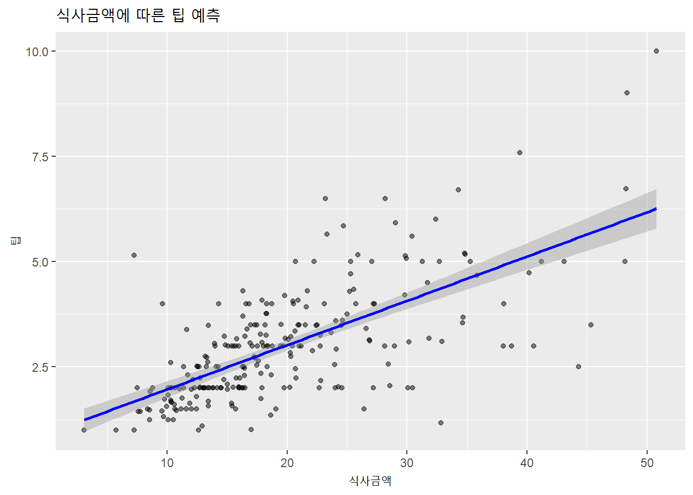
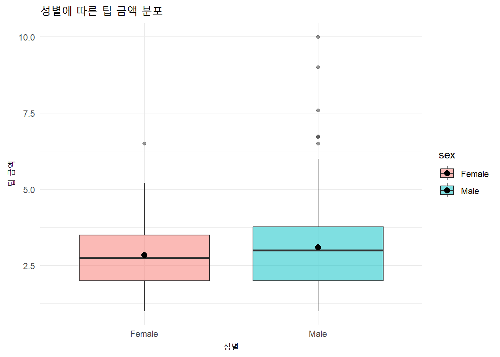
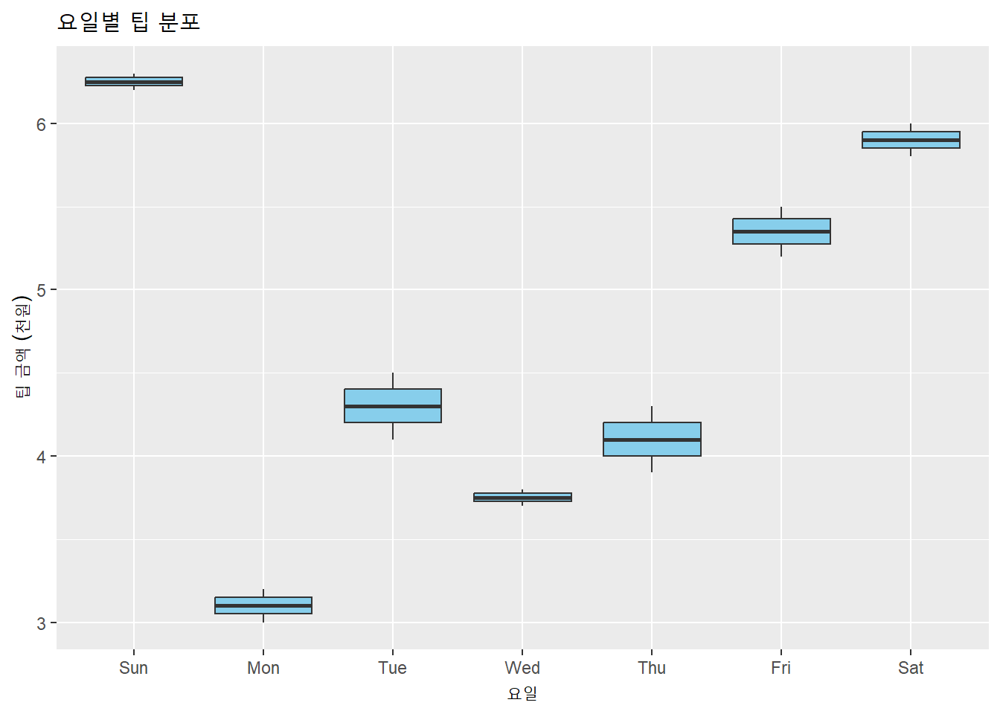
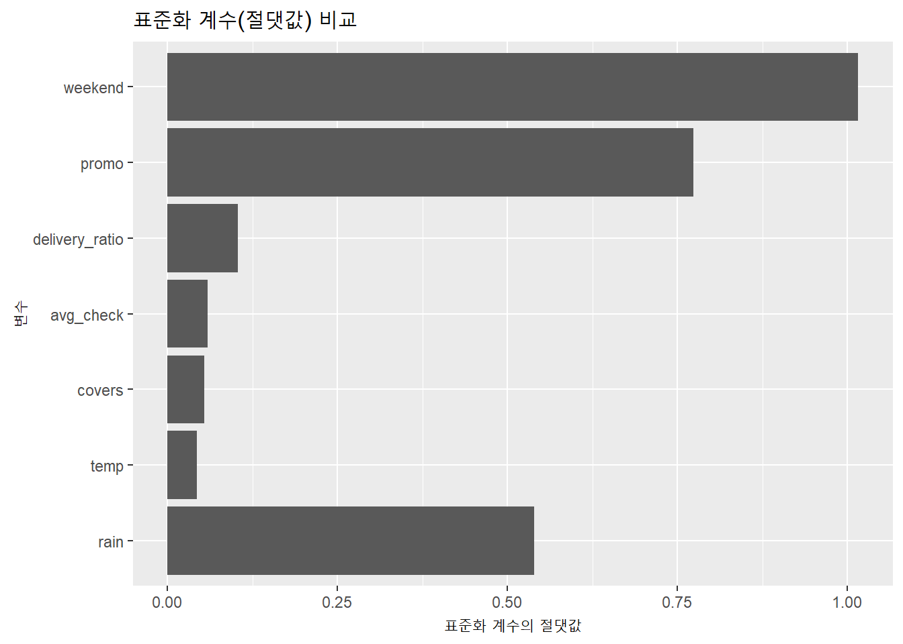
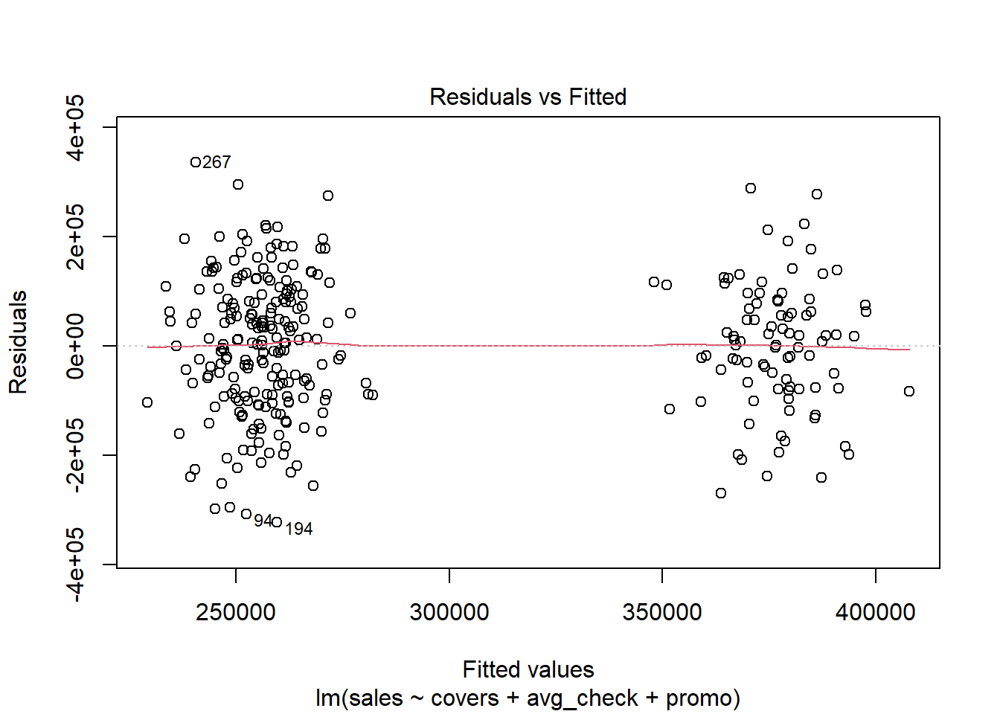
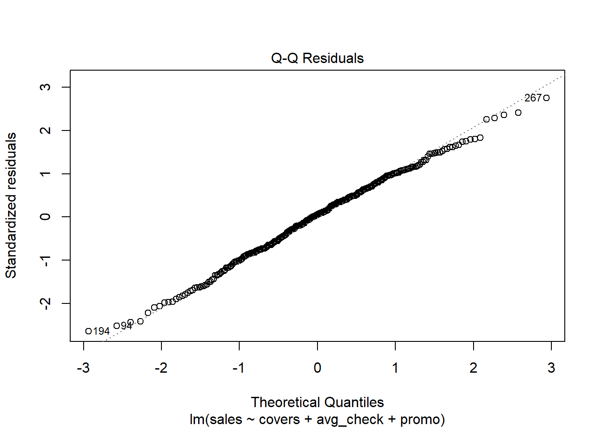
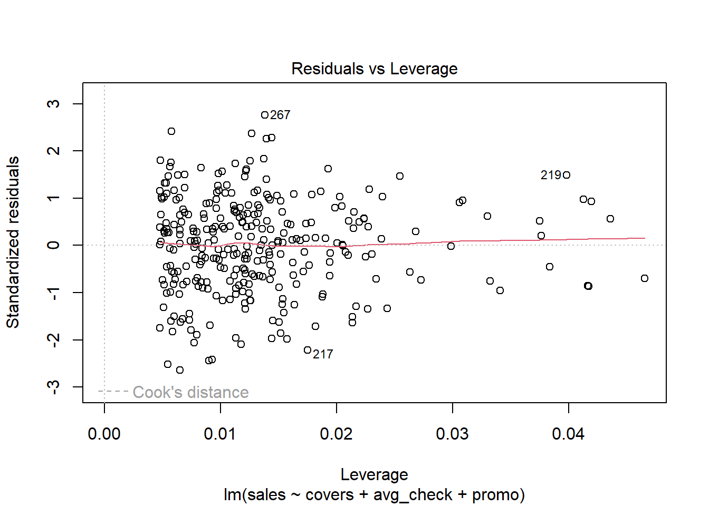
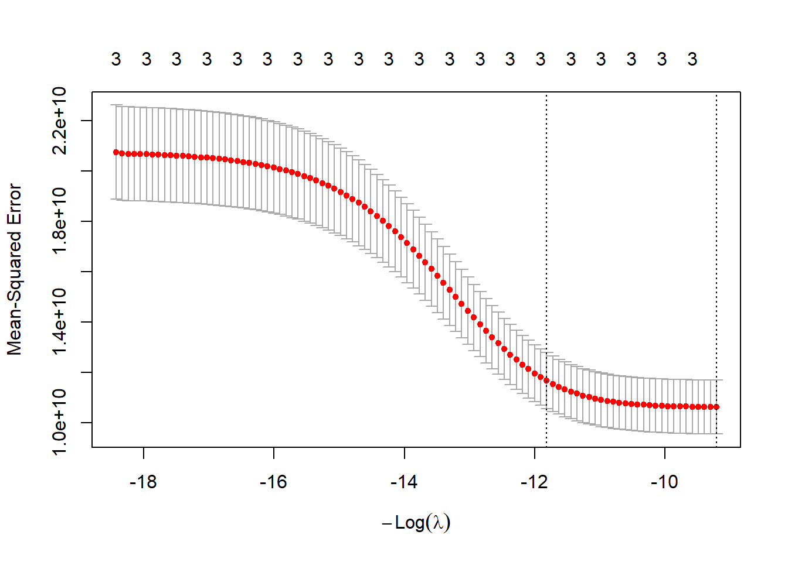
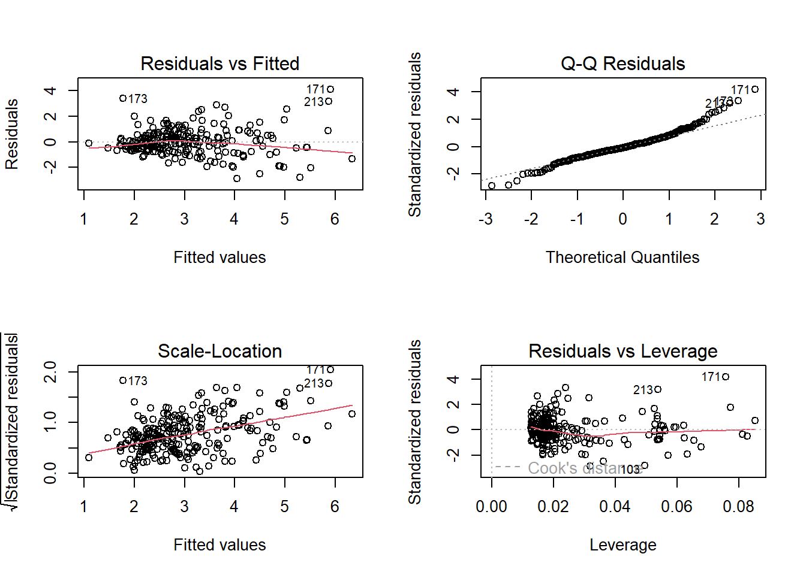

카페 매출이 어떤 요인에 따라 달라지는지를 알고 싶을 때, 가장 먼저 떠오르는 질문은 “무엇이 매출을 좌우하는가?”다. 예를 들어, 매장 위치, 날씨, 고객 수, 요일, 이벤트 유무 등이 매출과 어떤 관계가 있는지를 파악하고 싶다. 이러한 관계를 분석하기 위한 가장 기본적이고 강력한 도구가 바로 회귀분석이다. 회귀분석은 하나의 연속형 숫자(Y)가 하나 이상의 변수(X)에 의해 어떻게 변하는지를 수학식의 형태로 표현하는 도구다.
예측은 단지 미래를 맞히는 것이 아니라, 변수들 간의 관계를 구조적으로 이해하고 설명하는 행위다. 예측을 통해 얻을 수 있는 모델은 단순한 기계적 도구가 아니라, 그 현상을 바라보는 해석의 틀 역할을 한다. 따라서 회귀분석은 데이터로부터 의미 있는 해석을 이끌어내는 데 있어 필수적인 분석 기법이다.
6.1.2 상관분석과 회귀분석은 무엇이 다른가?
많은 학생들이 처음 회귀분석을 배울 때 상관분석과 혼동한다. 두 분석 모두 변수 간의 관계를 분석한다는 점에서는 유사하지만, 분석의 목적과 결과물은 완전히 다르다.
상관분석은 두 변수 사이의 선형적 관계의 강도를 측정하는 도구다. 즉, 두 변수가 얼마나 함께 움직이는지를 -1에서 1 사이의 수치로 표현한다. 하지만 상관분석은 방향성과 원인-결과 관계를 알려주지 않는다. 예를 들어, 커피 가격과 테이크아웃 비율 사이의 상관계수가 0.6이라고 해서 가격이 오르면 테이크아웃이 늘어난다고 단정할 수 없다.
반면 회귀분석은 하나의 변수가 다른 변수에 의해 어떻게 영향을 받는지, 그리고 그 영향을 수식으로 어떻게 예측할 수 있는지를 분석한다. 즉, 회귀분석은 “Y는 X에 따라 얼마나 변하는가?”라는 질문에 답한다. 이 과정에서 독립변수(설명변수)와 종속변수(반응변수)가 명확히 구분된다.
요약하면, 상관분석은 대등한 관계를, 회귀분석은 인과적(또는 예측적) 관계를 가정하고 분석을 수행한다. 즉, 인과관계가 없이 마구잡이로 변수를 투입하여 유의한 결과가 나올 때, 문제가 된다. 왜냐하면, 통계적으로는 유의하지만 실질적으로 인과관계의 어떠한 논리성도 없을 경우 이는 그저 분석을 위한 분석으로 끝나기 때문이다. 가장 심각한 것은 이런식의 결과를 실제 비즈니스 현장에 적용하려고 할 때 발생한다. 인과적 논리성이 부족한 상태에서 단지 유의한 결과가 나왔다는 이유만으로 전략을 구상하여 실행할 경우 그 여파는 매우 비관적일수 밖에 없다.
6.1.3 회귀식의 구조: 절편, 기울기, 그리고 오차
회귀식은 다음과 같은 구조로 이루어진다.
\[
Y = \beta_0 + \beta_1 X + \epsilon
\]
여기서 각 구성요소는 다음과 같은 의미를 가진다.
기호
설명
\(Y\)
종속변수, 예측하고 싶은 값 (예: 팁 금액)
\(X\)
독립변수, 설명에 사용되는 값 (예: 식사금액)
\(\beta_0\)
절편(intercept), X가 0일 때의 Y 값
\(\beta_1\)
기울기(slope), X가 1만큼 증가할 때 Y가 얼마나 증가하는지
\(\epsilon\)
오차항(error term), 모델이 설명하지 못하는 부분
이 수식을 외식산업에 적용해 보면 다음과 같은 해석이 가능하다. 예를 들어, 미국의 식당의 경우에는 팁을 주는 것일 일반적이다. 만약, 팁 금액 Y가 식사금액 X에 따라 어떻게 변하는지를 알고 싶다고 하자. 이때 회귀식을 통해 구한 결과가 다음과 같다고 가정하자.
팁 = 1.2 + 0.1 \(\times\) 식사금액
이 회귀식은 식사금액이 0원이더라도 기본적으로 1.2달러의 팁이 주어지고, 식사금액이 10달러 증가할 때마다 팁은 평균적으로 1달러씩 증가한다는 의미다. 물론 실제 데이터에서는 오차가 존재하므로, 각 관측치는 이 선형 예측값 주변에서 흩어져 있게 된다.
이처럼 회귀식은 단순한 수학공식이 아니라, 현상에 대한 정량적 해석과 예측을 가능하게 해주는 프레임워크다.
6.1.4 R로 회귀분석 첫 걸음: lm() 함수
회귀분석은 R에서 매우 간단하게 수행할 수 있다. 기본 내장 함수인 lm()을 사용하면 단순선형회귀부터 다중회귀까지 모두 수행 가능하다.
아래는 외식산업 데이터를 기반으로 한 예제다. tips 데이터셋에는 식사금액(total_bill)과 팁(tip), 인원수(size), 요일(day) 등의 정보가 담겨 있다. 이 중 식사금액이 팁에 어떤 영향을 미치는지를 알아보자.
# 패키지 로드 및 데이터 불러오기library(ggplot2)
Warning: package 'ggplot2' was built under R version 4.4.3
library(reshape2)
Warning: package 'reshape2' was built under R version 4.4.3
data("tips", package ="reshape2")# 단순 회귀모형 생성model1 <-lm(tip ~ total_bill, data = tips)# 결과 요약 출력summary(model1)
Call:
lm(formula = tip ~ total_bill, data = tips)
Residuals:
Min 1Q Median 3Q Max
-3.1982 -0.5652 -0.0974 0.4863 3.7434
Coefficients:
Estimate Std. Error t value Pr(>|t|)
(Intercept) 0.920270 0.159735 5.761 2.53e-08 ***
total_bill 0.105025 0.007365 14.260 < 2e-16 ***
---
Signif. codes: 0 '***' 0.001 '**' 0.01 '*' 0.05 '.' 0.1 ' ' 1
Residual standard error: 1.022 on 242 degrees of freedom
Multiple R-squared: 0.4566, Adjusted R-squared: 0.4544
F-statistic: 203.4 on 1 and 242 DF, p-value: < 2.2e-16
이 코드에서 lm(tip ~ total_bill, data = tips)은 \(\text{tip} = \beta_0 + \beta_1 \times \text{total bill} + \epsilon\) 형태의 회귀모델을 의미한다. summary(model1) 명령어를 실행하면 회귀계수, \(R^2\), t-값, p-값 등이 출력된다.
만약 Copilot이나 ChatGPT에게 자연어로 분석을 요청한다면 다음과 같이 프롬프트를 구성할 수 있다.
“build a regression model to predict tip amount using total_bill”
“식사금액으로 팁 금액을 예측하는 회귀분석 모델을 만들어.”
결과를 표로 정리하면 다음과 같다.
계수항목
추정값
표준오차
t값
p값
(Intercept)
0.9203
0.1597
5.76
<0.001
total_bill
0.1050
0.0094
11.2
<0.001
이 결과는 식사금액이 1달러 증가할 때마다 팁이 평균적으로 약 0.105달러 증가한다는 것을 보여준다. 또한 p값이 0.001 이하이므로 이 관계는 통계적으로 유의하다고 볼 수 있다.
6.1.5 시각화로 이해하기
회귀분석은 시각화를 통해 훨씬 더 직관적으로 이해할 수 있다. 아래는 팁과 식사금액 간의 관계를 산점도와 회귀선으로 표현한 그래프다.
ggplot(tips, aes(x = total_bill, y = tip)) +geom_point(alpha =0.5) +geom_smooth(method ="lm", se =TRUE, color ="blue") +labs(title ="식사금액에 따른 팁 예측", x ="식사금액", y ="팁")
`geom_smooth()` using formula = 'y ~ x'

이 그래프를 보면 대부분의 데이터가 회귀선 주변에 분포되어 있고, 선의 기울기가 양의 방향을 가리키고 있음을 알 수 있다. 이는 식사금액이 많을수록 팁도 함께 증가한다는 경향성을 시각적으로 확인해주는 결과다.
6.1.6 회귀분석은 예측이 아니라 해석의 도구다
많은 학생들이 회귀분석을 단순히 미래를 예측하는 모델로만 생각하지만, 회귀는 현상을 수치적으로 설명하기 위한 도구다. 예를 들어 “왜 어떤 고객은 더 많은 팁을 주었는가?”, “요일에 따라 팁이 달라지는가?”와 같은 질문에 수학적으로 접근할 수 있게 해준다.
회귀분석의 가장 큰 장점은 해석 가능성(interpretability)에 있다. 머신러닝처럼 복잡한 알고리즘보다 단순하지만, 변수와 변수 간 관계를 투명하게 보여준다는 점에서 정책 제안, 비즈니스 전략 수립, 고객 행동 분석 등 다양한 분야에서 활용도가 높다.
6.2 회귀분석과 t-test
6.2.1 평균 비교와 기울기 추정은 본질적으로 같다
처음 통계학을 배울 때 대부분의 학생은 그룹 간 차이를 비교하기 위해 t-검정을 먼저 접한다. 예를 들어 남성과 여성 고객의 평균 팁 금액이 차이가 있는지를 확인할 때 t-검정을 사용한다. 반면, 회귀분석은 숫자형 변수를 예측하기 위한 도구로 보이기 때문에 t-검정과는 완전히 다른 분석처럼 느껴진다. 하지만 이 둘은 통계적으로 거의 동일한 수학 구조를 갖는다.
두 그룹 간 평균 차이를 검정하는 독립표본 t-검정은 결국 “집단 간 평균이 같은가?”라는 가설을 검정한다. 반면, 회귀분석에서 더미변수(dummy variable)를 이용해 두 그룹을 구분하고 그 계수의 유의성을 검정하면, 본질적으로 동일한 질문을 하고 있는 셈이다. 즉, 이분형 더미변수를 가진 단순 회귀모형은 t-검정과 동일한 검정을 수행한다.
6.2.2 외식산업 예제로 살펴보는 두 방법의 연결
실제 사례로 이해하는 것이 가장 효과적이다. 팁 데이터(tips 데이터셋)를 사용하여 성별에 따른 평균 팁 금액이 차이가 있는지를 t-검정과 회귀분석 두 방식으로 각각 검토해보자.
먼저 데이터를 불러오고 요약 정보를 확인해본다.
library(reshape2)library(dplyr)
Warning: package 'dplyr' was built under R version 4.4.3
Attaching package: 'dplyr'
The following objects are masked from 'package:stats':
filter, lag
The following objects are masked from 'package:base':
intersect, setdiff, setequal, union
data("tips", package ="reshape2")glimpse(tips)
Rows: 244
Columns: 7
$ total_bill <dbl> 16.99, 10.34, 21.01, 23.68, 24.59, 25.29, 8.77, 26.88, 15.0…
$ tip <dbl> 1.01, 1.66, 3.50, 3.31, 3.61, 4.71, 2.00, 3.12, 1.96, 3.23,…
$ sex <fct> Female, Male, Male, Male, Female, Male, Male, Male, Male, M…
$ smoker <fct> No, No, No, No, No, No, No, No, No, No, No, No, No, No, No,…
$ day <fct> Sun, Sun, Sun, Sun, Sun, Sun, Sun, Sun, Sun, Sun, Sun, Sun,…
$ time <fct> Dinner, Dinner, Dinner, Dinner, Dinner, Dinner, Dinner, Din…
$ size <int> 2, 3, 3, 2, 4, 4, 2, 4, 2, 2, 2, 4, 2, 4, 2, 2, 3, 3, 3, 3,…
sex 변수는 “Male” 또는 “Female”로 이루어진 이분형 범주형 변수다. 이 변수에 따라 팁 평균이 얼마나 다른지 t-검정을 먼저 수행한다.
# 성별에 따른 팁 평균 비교: t-testt.test(tip ~ sex, data = tips)
Welch Two Sample t-test
data: tip by sex
t = -1.4895, df = 215.71, p-value = 0.1378
alternative hypothesis: true difference in means between group Female and group Male is not equal to 0
95 percent confidence interval:
-0.5951448 0.0828057
sample estimates:
mean in group Female mean in group Male
2.833448 3.089618
이 결과에서 p값이 0.05보다 작다면, 성별에 따른 팁 차이가 통계적으로 유의하다는 해석이 가능하다. 이때 평균 비교는 두 그룹의 평균 차이를 기반으로 판단된다. 하지만 위의 결과는 두 그룹 간에 차이가 없다는 것을 보여주고 있다.
어쨋거나, 이제 동일한 분석을 회귀분석을 이용해 수행해 보자. 여기서 핵심은 sex 변수를 회귀식의 독립변수로 넣고 팁 금액을 종속변수로 설정하는 것이다.
# 성별을 더미변수로 포함한 단순 회귀분석model_gender <-lm(tip ~ sex, data = tips)summary(model_gender)
Call:
lm(formula = tip ~ sex, data = tips)
Residuals:
Min 1Q Median 3Q Max
-2.0896 -1.0896 -0.0896 0.6666 6.9104
Coefficients:
Estimate Std. Error t value Pr(>|t|)
(Intercept) 2.8334 0.1481 19.137 <2e-16 ***
sexMale 0.2562 0.1846 1.388 0.166
---
Signif. codes: 0 '***' 0.001 '**' 0.01 '*' 0.05 '.' 0.1 ' ' 1
Residual standard error: 1.381 on 242 degrees of freedom
Multiple R-squared: 0.007896, Adjusted R-squared: 0.003797
F-statistic: 1.926 on 1 and 242 DF, p-value: 0.1665
출력된 결과를 보면 두 개의 계수가 나타난다. 하나는 절편(intercept), 다른 하나는 sexMale이다. 여기서 Female이 기준 범주로 자동 설정되었기 때문에, 절편은 여성 고객의 평균 팁을 의미하고, sexMale 계수는 남성 고객과 여성 고객 간 평균 팁 차이를 의미한다. 지금은 어렵겠지만 이후 뒤에서 더미변수에 대한 보다 자세한 내용을 공부할 것이다. 여기서는 이 성별 변수의 유의성만을 우선적으로 보자.
만약 sexMale 계수의 p값이 0.05보다 크다면, 이는 앞의 t-검정 결과와 동일한 결론을 내린다. 다시 말해, 회귀모형의 더미변수 유의성 검정은 t-검정과 동일한 검정을 수학적으로 수행하고 있다. 보다 자세한 내용은 뒤의 더미변수를 공부할 때 더 자세하게 알아보자.
분석 방법
종속변수
독립변수
해석 기준
수학적 의미
t-검정
tip
성별 (2집단)
두 집단 평균이 같은가
평균 차이
회귀분석 (더미)
tip
sex (Female 기준)
남성과 여성 간 기울기 차이
평균 차이
이처럼, 두 분석은 접근 방식은 다르지만 결국 동일한 통계적 검정을 수행하고 있다.
6.2.3 시각화를 통한 직관적 비교
시각화를 통해 이 차이를 한눈에 이해할 수 있다. 다음 그래프는 성별에 따른 평균 팁 금액을 나타낸다.
library(ggplot2)ggplot(tips, aes(x = sex, y = tip, fill = sex)) +geom_boxplot(alpha =0.5) +stat_summary(fun = mean, geom ="point", shape =20, size =4, color ="black") +labs(title ="성별에 따른 팁 금액 분포", x ="성별", y ="팁 금액") +theme_minimal()

이 그래프에서 두 그룹의 평균 차이가 눈에 띄게 보이지 않는다면, 이는 곧 t-검정이나 회귀분석 모두에서 유의한 결과가 나올 가능성이 크다는 것을 시사한다. 다만 위의 박스플롯은 평균이 아닌 중위값을 보여주고 있다는 점을 잊지 않길 바란다. 다만 우리는 위의 박스플롯을 통해 전반적인 남녀간의 팁 금액의 분포를 확인할 수는 있다. 둘다 거의 비슷하지만, 남성이 의외로 매우 많은 팁을 주는 아웃라이어가 생각보다 많다는 것이 특징이다.
6.2.4 반대로 회귀분석을 통해 t-test를 대체할 수도 있다
현실의 데이터 분석에서는 두 집단뿐 아니라 세 집단 이상, 혹은 연속형 변수와 혼합된 경우가 많다. 이때는 단순한 t-검정보다는 회귀분석을 사용하는 것이 더 유연하고 해석도 명확하다.
예를 들어, 요일에 따른 팁 차이를 보고 싶다면 t-검정을 여러 번 하는 것이 아니라, 요일을 범주형 변수로 포함한 회귀모형 하나를 만드는 것이 더 바람직하다. 또한 회귀분석은 결과표에서 계수와 오차, 신뢰구간 등 다양한 정보를 함께 제공하므로 단순한 유의성 검정뿐 아니라 효과 크기까지 동시에 파악할 수 있다.
결론적으로, 두 집단의 평균 차이를 알고 싶다면 t-검정이나 회귀분석 모두 사용할 수 있다. 단, 회귀분석은 더미변수를 통해 집단 간 차이를 수식으로 표현하고, 나아가 여러 설명변수를 동시에 모델에 포함시킬 수 있다는 점에서 더 일반화된 접근이다.
이제부터는 두 집단 비교뿐 아니라 여러 개의 독립변수가 함께 작용하는 복잡한 현실을 설명하기 위해 회귀분석의 구조를 좀 더 깊이 있게 다루게 된다. 다음 절에서는 회귀 결과표에 나오는 계수와 유의성 수치를 어떻게 해석해야 하는지 구체적으로 살펴본다.
6.3 회귀 결과표 읽기
6.3.1 결과표를 보는 순간 막막해지는 이유
처음 회귀분석 결과를 보면 숫자와 용어들이 가득한 표 하나만 덩그러니 주어진다. Estimate, Std.Error, t-value, p-value 같은 생소한 용어들이 나열되어 있고, 아래에는 R-squared와 Adjusted R-squared가 등장한다. 대부분의 학생은 이 표를 보고 무엇을 먼저 봐야 하는지, 어떤 수치가 중요한지 감을 잡지 못한다.
하지만 이 결과표는 회귀모형의 모든 것을 요약한 핵심 요약본이다. 이 표를 제대로 읽을 수 있어야만, 회귀분석을 단순히 ’코드 돌리기’에서 ’해석과 설명의 도구’로 확장할 수 있다. 회귀분석 결과표는 단순한 숫자의 나열이 아니라, 예측 변수들이 종속변수에 어떤 방식으로, 얼마나 유의하게, 얼마만큼 영향력을 미치는지를 보여주는 지도다.
6.3.2 외식산업 예제로 다시 시작하기
tips 데이터셋을 이용하여 ’total_bill’이 팁(tip)에 미치는 영향을 분석해보자. 앞에서 만든 단순회귀모형의 결과를 다시 불러온다.
library(reshape2)data("tips", package ="reshape2")model1 <-lm(tip ~ total_bill, data = tips)summary(model1)
Call:
lm(formula = tip ~ total_bill, data = tips)
Residuals:
Min 1Q Median 3Q Max
-3.1982 -0.5652 -0.0974 0.4863 3.7434
Coefficients:
Estimate Std. Error t value Pr(>|t|)
(Intercept) 0.920270 0.159735 5.761 2.53e-08 ***
total_bill 0.105025 0.007365 14.260 < 2e-16 ***
---
Signif. codes: 0 '***' 0.001 '**' 0.01 '*' 0.05 '.' 0.1 ' ' 1
Residual standard error: 1.022 on 242 degrees of freedom
Multiple R-squared: 0.4566, Adjusted R-squared: 0.4544
F-statistic: 203.4 on 1 and 242 DF, p-value: < 2.2e-16
6.3.3 Estimate: 계수 추정치가 말해주는 것
Estimate는 회귀계수의 추정치다. total_bill의 계수가 0.10502라는 뜻은 식사금액이 1달러 증가할 때마다 팁이 평균적으로 약 10.5센트 증가한다는 의미다. 절편(intercept)은 total_bill이 0일 때 예상되는 팁 금액으로, 여기서는 약 0.92달러다.
이 식은 예측을 위한 기본 공식이며, Estimate 값이 바로 회귀분석의 핵심 결과다. 모든 해석은 이 계수를 중심으로 이루어진다.
6.3.4 Std. Error: 추정값의 신뢰도
표준오차(Std. Error)는 회귀계수의 신뢰도를 나타내는 수치다. 표준오차가 작을수록 해당 추정값에 대한 불확실성이 낮고, 추정치의 정밀도가 높다는 뜻이다. 표준오차가 큰 경우는 다음과 같은 상황에서 발생할 수 있다. 예를 들어, 식사금액이 팁에 미치는 영향이 일정하지 않고, 관측값마다 차이가 클 경우 표준오차가 커진다. 이는 모델의 설명력이 낮고, 해당 계수를 신뢰하기 어렵다는 경고 신호로 해석할 수 있다.
다르게 표현하자면, 산포도 위에 회귀직선을 그린다고 가정하면, 표준오차가 작은 경우는 회귀직선을 중심으로 점들이 모여있는 경우로, 이 경우에는 회귀직선의 추정값에 대한 불확실성이 낮고, 회귀직선의 추정값 즉 Estimate의 정확도가 높다는 의미가 된다. 반대로, 표준오차가 큰 경우는 회귀직선을 중심으로 점들이 넓게 퍼져있는 경우로, 이 경우에는 회귀직선의 추정값에 대한 불확실성이 높고, 회귀직선의 추정값 즉 Estimate의 정확도가 낮다는 의미가 된다.
6.3.5 왜 Estimate와 Std. Error를 동시에 보아야 하는가?
여기서 흔하게 하는 한 가지 오해를 짚어볼 필요가 있다. 위의 Estimate는 통계적 판단일까? 아닐까? 다소 의아한 질문일 수 있다. 이 궁금증을 해결하려면 다음의 질문에 답할 수 있어야 한다. 회귀계수의 추정치인 Estimate는 어떻게 계산되는 것일까? 정답을 이야기 하자면 최소제곱(Least Square)법이라는 수학적 방법에 의해 계산이 된 것이다. 그렇다면 이 계산법은 무엇일까?
회귀계수의 계산 방법을 이해하기 전에 우리는 산포도의 점들로부터 회귀직선을 얻어내는 것이 회귀분석이라는 것을 알 수 있다. 그렇다면 이 회귀직선의 식은 어떤 방법으로 얻어지는 것일까? 이 회귀직선의 방정식이 바로 최소제곱법에 의해 얻어진다. 그렇다면, 다음 질문은 왜 최소제곱법이냐는 것이다.
우선 산포도의 점들로부터 회귀직선을 그릴 때, 우리는 논리적으로 가장 좋은(?) 회귀직선을 그리고자 할 것이다. 그렇다면 가장 좋은 회귀직선은 무엇인가? 쉽게 답하기 어려울 수도 있으나 간단하게 말하자면, 우리가 가진 데이터 즉, 산포도의 점들을 가장 잘 대표하는 직선이 아마도 가장 좋은 회귀직선일 것이다. 그렇다면 가장 잘 대표한다는 것은 무슨 뜻일까? 이는 데이터로부터 추정된 회귀직선과 데이터 사이의 오차(error)가 가장 작은 직선이 가장 좋은 회귀직선이 될 것이라고 우리는 논리적으로 생각해 볼 수 있다. 그렇다면 오차(error)란 무엇일까? 회귀분석에서 오차(error)는 다음과 같이 정의된다.
\[
\text{error} = y - \hat{y}
\]
위의 식에서 \(y\)는 우리가 가진 종속변수의 개별 관찰값을 의미하고, \(\hat{y}\)은 해당 관찰값을 회귀직선으로 예측한 값이 된다. 위의 팁금액의 예제를 사용해서 정확하게 표현하자면 다음과 같다.
예를 들어, 우리가 가진 데이터에는 total_bill이 16.99이고 팁이 1.01인 데이터가 있다고 가정해보자. 이 경우 실제 관찰된 팁 금액은 $1.01이지만, 위의 회귀식을 통해 예상된 팁, \(\widehat{\text{예상 팁}} = 0.92 + 0.105 \times 16.99 \approx 2.70\)이 된다. 그러므로 오차(error)는
또 다른 관찰값의 경우에는 total_bill이 14.78이고 팁이 3.23인 데이터가 있다고 가정해보자. 이 경우 실제 관찰된 팁 금액은 $3.23이지만, 위의 회귀식을 통해 예상된 팁, \(\widehat{\text{예상 팁}} = 0.92 + 0.105 \times 14.78 \approx 2.47\)이 된다. 그러므로 오차(error)는
따라서, 오차(error)는 양수가 될 수도 있고 음수가 될 수도 있다. 우리가 앞서 좋은 회귀직선이란 오차를 최소화하는 직선이라고 정의 했는데, 만약 오차를 그대로 모두 합한 뒤에 이 오차의 합이 최소가 되는 회귀직선을 찾는다면 분명히 문제가 발생할 것이다. 왜냐하면, 이미 플러스와 마이너스인 오차가 더해지면서 실제 오차는 뭉개져버렸기 때문이다. 따라서 이런 문제를 해결하기 위해 회귀분석에서는 오차의 제곱의 합이 최소가 되는 회귀직선의 식을 구하는데, 이 방법이 바로 최소제곱법이다.
중요한 것은, 이 최소제곱법에 의해 계산된 Estimate 값은 수학적인 방법에 의해 계산된, 오차의 제곱의 합을 최소로 하는 회귀직선의 방정식이므로 통계적인 판단이 아니라 수학적인 판단인 것이다. 아직도 통계와 수학을 구분하지 못한다면 Chapter 1으로 다시 돌아가서 차분히 읽어보고 이해해 보도록 하라.
그러므로, Estimate에서 끝난다면 회귀분석은 통계가 아닌 수학적 계산의 범주에 머물러야 한다. 그렇다면 이제 어떻게 이 Estimate를 통계의 영역으로 끌어들일 수 있을까? 그 열쇠가 바로 Std. Error인 것이다. 즉, 최소제곱법에 의해 계산된 Estimate는 그 값이 결정되긴 했으나 확률적으로는 아직 이 값이 맞는지 틀리는지 확인된 바가 없는 것이다. 다시 위의 팁금액의 예제로 돌아가 보자. 위의 예제에서 Estimate \(\beta_1\)은 0.105였다. 이 값은 최소제곱법에 의해 계산되기는 했으나 확률적으로는 아직 모른다. 무엇을 모른단 말일까? 통계적으로 생각한다는 것은 어떤 사건이 우연히 발생할 확률이 얼마일까?라고 고민해 보는 것이 시작점이라고 이미 이야기했다. 여기서 어떤 사건은 바로 \(\beta_1 = 0.105\)이다. 최소제곱법이라는 수학적 계산방법에 의해 우리는 0.105라는 값을 얻기는 했으나, 이 값이 진짜로 그런지 아닌지는 확률적으로 알 수가 없다. 이 때, 다시 통계적 가설이 등장한다.
\[
H_0: \beta_1 = 0
\]
\[
H_a: \beta_1 \ne 0
\]
무슨 뜻일까? 수학적 계산상으로는 \(\beta_1 = 0.105\)이지만, 이 \(\beta_1\)이 확률적으로 얼마인지는 확률을 구해봐야 하는 것이다. 여기서 중요한 것은 우리의 귀무가설이 \(H_0: \beta_1 = 0\)이지, \(H_0: \beta_1 = 0.105\)가 아니라는 것이다. 즉, 우리는 확률적으로 이 회귀계수의 추정치가 0이 아닐 가능성을 조사하는 것이지, 이 회귀계수의 추정치가 0.105인지 아닌지를 조사하는 것은 아니라는 것이다. 만약, 귀무가설이 기각된다면, 우리는 이 회귀계수의 추정치가 0이 아니라고 결론내릴 수 있기 때문에, 최소제곱법에 의해 계산된 0.105라는 값이 유의하다 즉, total_bill이 $1.0 증가할 때마다 팁 금액이 10.5센트 유의미하게 증가할 것이라고 예측할 수 있는 것이다.
문제는 이러한 판단에 필요한 것이 바로 표준오차(Std. Error)라는 것이다. 표준오차가 정도이상으로 커서 회귀계수의 추정치 Estimate를 의미 없게 만들 수 있으므로, 이런 경우에는 최소제곱법의 계산결과와 관계없이 확률적으로 Estimate \(\beta_1 = 0\)이라는 귀무가설을 받아들여서 total_bill은 팁 금액과 아무 관계가 없다고 결론을 내릴 것이다. 반대로, 표준오차가 매우 작아서 회귀계수의 추정치 Estimate가 의미있는 수준이라고 판단되면, 우리는 귀무가설을 기각하고 최소제곱법에 의해 얻어진 회귀계수의 추정치 0.105를 유의하게 해석할 수 있을 것이다. 결론적으로 total_bill이 $1.0 증가할 때마다 팁 금액이 10.5센트 유의미하게 증가할 것이라고 말할 수 있다.
사실 많은 분석가들 심지어 사회과학 박사학위를 가진 사람들조차도 회귀분석 결과표에서 단순히 p-값만 보고 유의하다 아니다만을 앵무새처럼 반복하는 경우가 많다. 이는 근본적으로 회귀분석이라는 시스템의 근간을 이해하지 못하는데서 발생하는 문제이다. 우리가 통계학자들처럼 계산을 하고 증명을 하는 방식으로 학습을 하지는 않더라도, 기본적인 시스템에 대한 이해는 매우 중요하다.
그럼 이제, 이 표준오차를 이용해 어떻게 p-값까지 가는지 확인해보자.
6.3.6 t-value와 p-value: 통계적 유의성을 검정하다
t-value는 계수 추정치가 0과 얼마나 다른지를 검정하는 통계량이다. t-검정에서의 t-값과 동일한 개념이며, t-값이 클수록 해당 변수의 영향력이 유의하다고 판단된다. \(\text{t-value} = \text{Estimate} \div \text{Std.Error}\) 이라는 공식을 기억해두자. 즉, 기울기가 크고 표준오차가 작으면 t-값은 커진다. 위 예제에서 total_bill의 t-값은 14.26으로 매우 크다.
p-value는 이 t-값이 우연히 발생할 확률을 의미한다. 일반적으로 p-값이 0.05보다 작으면 유의미한 변수로 판단한다. 위 결과에서는 total_bill의 p-값이 0.000… 수준이므로, 팁 금액에 유의한 영향을 미치는 변수임을 확인할 수 있다. 반면 p-값이 0.1, 0.2처럼 크다면 해당 변수는 회귀식에 넣을 이유가 없다는 해석이 가능하다. 이는 변수 선택 과정에서도 매우 중요한 기준이다.
결과표를 다시 확인해보자.
Estimate
Std. Error
t-value
p-value
(Intercept)
0.920
0.160
5.76
2.53E-08
total_bill
0.105
0.007
14.26
< 2e-16
순서를 보면, 변수명, 회귀계수의 추정치, 표준오차, t-value, p-value의 순서로 되어 있다. 앞서 이야기 했듯이, t-value의 계산식은 다음과 같다.
왜 t-value를 \(\beta_1 \div SE_{\beta_1}\)로 계산하냐고 물을 수 있다. 우선 생각을 좀 다르게 해보자면, 우리가 앞서 보았던 two-sample t-test를 생각해 보자면, 위의 공식 마지막의 분자는 \(\beta_1 - 0\)인데, 이를 두 그룹의 평균값의 차이로 이해해 본다면 한 그룹의 평균값은 \(\beta_1\)이고 다른 그룹의 평균값은 0인 두 그룹을 비교한다고 생각하면 쉽다. 혹은 one-sample t-test에서 어느 그룹의 평균값이 \(\beta_1\)인데 이 평균값이 0과 같은지 다른지 알고 싶어서 하는 t-test라고 생각하면 쉽다.
일단 두 그룹이든 한 그룹이든 어느 그룹의 평균값이 0인지 아닌지 알고싶다라는 것은 위의 회귀분석의 귀무가설과 일치한다. 그래서 회귀계수의 추정치에서 0을 빼고 이를 검정해보는 것이다. 이렇게 해봐야 어차피 0을 빼는 것은 의미가 없으므로 그냥 해당 그룹의 평균값에서 그 그룹의 표준오차를 나눈다고 보면 된다. 왜 표준오차를 나누는 지는 이미 t-test에서 설명했으므로 더 이상 하지 않겠다.
다만, 학생들이 의아하는 것이 갑자기 왜 평균값이 등장했는가?일 것이다. 앞서 최소제곱법에 대한 설명이 없기도 했거니와 회귀분석이라는 이름에 대한 설명도 없었기에 아마도 이상할 수 있다. 그럼 일단 최소제곱법의 근간을 다시 살펴보자. 최소제곱법이란 오차(error)의 제곱의 합이 최소가 되는 수리적 계산방법이다.
바로 분산의 계산식이다. 위의 식에서 \(\hat{y}\)을 평균인 \(\overline{y}\)로 바뀌서 보면 분산 계산식의 분자부분과 겹쳐보인다. 정확히는 실제로 이 최소제곱법은 회귀직선이 평균값을 지날 때, 오차의 제곱의 합이 최소가 된다. 무슨 뜻이냐면, 회귀분석에서 “회귀”란 영어로도 동일한 의미의 “regress”라는 단어인데, 이는 어딘가로 돌아간다는 의미이다. 마치 연어가 알을 낳기 위해 강을 거슬러 올라가는 것을 회귀라고 부르듯이 이 분석은 어딘가로 돌아간다는 의미이다. 과연 어디로 회귀하는 회귀분석일까? 바로 평균으로의 회귀이다. 모든 회귀분석 결과인 회귀직선은 평균값을 지나간다. 따라서, 회귀직선의 기울기는 곧 평균값을 의미하는 것이고 그러므로 당연히 t-test를 이용해서 검정할 수 있는 것이다.
그렇다면, 정말 평균을 지나는지 아닌지 확인해보자. 다음의 코드는 데이터의 기술통계와 새로운 회귀모델을 포함하고 있다. model2는 독립변수는 없고 오직 절편만을 포함하는 모델이다. 이 경우 회귀직선을 어디를 지나가게 될까? 확인해보면, 절편의 값과 tip 변수의 평균값이 똑같다는 것을 알 수 있다. 이는 회귀분석이라는 분석방법이 평균값을 지나는 직선을 구하는 방법이라는 의미이다.
summary(tips)
total_bill tip sex smoker day time
Min. : 3.07 Min. : 1.000 Female: 87 No :151 Fri :19 Dinner:176
1st Qu.:13.35 1st Qu.: 2.000 Male :157 Yes: 93 Sat :87 Lunch : 68
Median :17.80 Median : 2.900 Sun :76
Mean :19.79 Mean : 2.998 Thur:62
3rd Qu.:24.13 3rd Qu.: 3.562
Max. :50.81 Max. :10.000
size
Min. :1.00
1st Qu.:2.00
Median :2.00
Mean :2.57
3rd Qu.:3.00
Max. :6.00
model2 <-lm(tip ~1, data = tips)summary(model2)
Call:
lm(formula = tip ~ 1, data = tips)
Residuals:
Min 1Q Median 3Q Max
-1.9983 -0.9983 -0.0983 0.5642 7.0017
Coefficients:
Estimate Std. Error t value Pr(>|t|)
(Intercept) 2.99828 0.08858 33.85 <2e-16 ***
---
Signif. codes: 0 '***' 0.001 '**' 0.01 '*' 0.05 '.' 0.1 ' ' 1
Residual standard error: 1.384 on 243 degrees of freedom
6.3.7 Copilot 프롬프트 활용 예시
다음은 ChatGPT나 Copilot을 활용할 수 있는 자연어 프롬프트 예시다.
“explain regression summary in simple terms”
이 프롬프트는 summary(model) 결과에 대해 각 수치의 의미를 쉽게 설명해주도록 요청하는 명령이다. 예를 들어 아래와 같은 답변이 나올 것이다.
The intercept means that when total_bill is zero, the tip is expected to be around 0.92. The coefficient of total_bill is 0.105, meaning each additional dollar in bill increases the tip by about 10 cents. The p-value is very small, so the relationship is statistically significant.
또는
식사금액이 0일 때 예상 팁은 약 0.92달러이고, 식사금액이 1달러 증가할 때마다 팁이 약 10센트 증가한다. 이 관계는 통계적으로 유의하다.
위와 같은 방법을 소개하는 이유는 간단하다. 만약 처음 보는 새로운 분석방법이 있다면 위와 같이 AI의 도움으로 해석과 이해를 할 수 있다는 점이다. 그러나, 위의 방법을 아무런 학습없이 무조건적으로 할 경우 본인의 능력은 더 이상 개발되지 않는다. AI는 조력자이지 대체자가 아니다. 만약, 아무런 학습 없이 AI에 의지할 경우 잘못된 결과와 해석을 그대로 받아들이는 위험은 물론이고, 더 이상 인간 분석가를 사용할 이유가 없어지므로 진짜 AI가 인잔을 대체할 수도 있다. 이는 AI가 뛰어나서가 아니라, 인간이 게으르기 때문에 발생할 미래의 위험요인이다. 학습을 위해 적극적으로 AI를 사용하는 것은 좋은 일이지만, 아무런 비판과 회의적시각 그리고 사실확인 없이 AI를 무차별적으로 사용할 경우 오히려 AI가 인간을 대체할 명분을 줄 가능성이 높다.
6.3.8\(R^2\)와 Adjusted \(R^2\): 모델의 설명력
회귀분석 결과에서 Multiple R-squared는 이 회귀모형이 전체 데이터를 얼마나 잘 설명하고 있는지를 나타낸다. 앞서 설명했듯이, 우리가 하는 통계는 모두 분산놀음이다. 회귀분석은 그 중에서도 종속변수의 분산을 투입된 독립변수가 얼마나 많이 설명하는지 확인하는 작업이다. 여기서 설명된 분산의 양이 바로 \(R^2\)이다. 일반적으로 우리가 회귀분석에 투입하는 독립변수들의 집합을 모델이라고 부른다. 이 모델의 근본적인 목적은 종속변수의 분산을 설명하는 것이다. 종속변수의 분산 중 몇 %가 설명되었는지가 바로 \(R^2\)이다.
위의 결과에서는 \(R^2\)가 0.4566이므로, total_bill 하나의 변수만으로 전체 팁 금액의 약 45.7%를 설명하고 있다는 뜻이다. 이는 매우 중요한 해석이다. 아무리 계수나 p값이 좋아도, 전체 변동의 대부분이 설명되지 않는다면 모델로서의 활용도는 제한적일 수 있다.
그런데, 만약 분석가가 높은 \(R^2\)를 목적으로 엄청나게 많은 양의 독립변수를 넣는다면 어떻게 될까?
이론적으로는 전혀 유의하지 않은 변수의 추가 조차도 아주 작은 양의 종속변수의 분산을 설명할 수 있다. 단 0.001%라도 \(R^2\)가 증가한다면, 분석가는 이를 위해 수십에서 수백개의 독립변수를 추가할 수도 있다. 이렇게 되면 어떤 일이 발생할까? 뒤에서 보겠지만 전통적인 통계학에서는 VIF (Variance Inflation Factor)에 문제가 발생한다고 본다. 실제 통계 프로그램에서 이를 확인해볼 수 있다. 뒤에서 보겠지만 간단하게 설명하자면, 투입된 독립변수들이 서로 비슷한 변수라면 결국 겹칠 수 밖에 없고, 이렇게되면 Variance가 비정상적으로 Inflation 된다는 의미이다. 분산이 비정상적으로 커지면 무엇이 문제일까? 앞서 t-value는 회귀계수의 추정치를 표준오차로 나눈 값이라고 이야기 했다. 이때, 이 표준오차는 분산의 영향을 받는 값으로 분산이 비정상적으로 팽창했다면, 당연히 표준오차도 비정상적으로 커졌을 것이므로, 이 경우 t-value는 비정상적으로 작아진다. 따라서 유의해야할 변수가 유의하지 못하는 상황이 발생한다.
두번째로, 최근의 빅데이터 분석의 흐름에서 보자면, 이런 경우 Overfitting 즉, 과적합을 의심하게된다. 우리는 일반적으로 샘플을 이용해서 분석을 할 수 밖에 없는데, 내가 가진 샘플에서만 \(R^2\)가 잘 나오게 모델을 만들었다면, 같은 분석을 위해 다시 표본을 구해서 분석하면 전혀 맞지 않을 것이다. 즉, 현재 나의 데이터에만 과하게 잘 맞는다는 의미가 과적합이다.
이런 문제를 체크하기 위해, Adjusted R-squared는 변수 수가 늘어날 때 발생할 수 있는 과적합 문제를 보정한 설명력 지표다. 독립변수가 하나일 경우 \(R^2\)와 거의 차이가 없지만, 다중회귀에서 유용하다. 따라서, 일반적으로 회귀모형의 적합도를 비교할 때는 Adjusted \(R^2\)를 더 신뢰할 수 있다.
6.3.9 모델 전체의 유의성: F-통계량
결과표 아래쪽에 나오는 F-statistic은 전체 회귀모형이 통계적으로 유의한지를 검정한다. 단순 회귀에서는 거의 사용하지 않지만, 다중회귀모형에서는 전체 모델의 타당성을 판단하는 핵심 수치다. 기본적으로 이 F-value는 앞에서 본 분산분석의 그 F-value이다.
F-statistic이 크고, 그에 따른 p-value가 0.05 미만이면 모델 전체가 통계적으로 유의하다고 판단할 수 있다. 이는 현재 투입된 독립변수 중에 유의한 변수가 적어도 하나 이상 있다는 의미이다. 따라서, 현대의 통계학이나 애널리틱스에서는 그다지 관심을 두지는 않는다. 다만 이런한 통계결과를 이해할 필요는 분명히 있다. 학습은 이런 작은 하나 하나로부터 시작되는 것이디 때문이다.
6.3.10 결과표 해석을 구조화하는 연습
모든 회귀분석 결과를 해석할 때는 다음의 질문 순서를 따르면 된다.
1. 이 변수의 계수(Estimate)는 양(+)인가 음(-)인가? 2. 계수의 크기는 얼마나 되며, 해석 가능한가? 3. 표준오차는 작고 정밀한가? 4. t값과 p값은 유의수준 0.05를 만족하는가? 5. 전체 모델의 R²는 충분한가? 6. Adjusted R²로 봤을 때 과적합 문제는 없는가?
이 구조를 기억하면, 어떤 회귀모형이든 해석이 훨씬 명확해진다.
6.4 더미변수 다루기: 범주형 변수의 회귀 활용
회귀분석은 연속형 변수뿐만 아니라 범주형 변수(categorical variable)도 독립변수로 포함할 수 있다. 하지만 범주형 변수는 수치가 아니라서 그대로는 회귀모델에 사용할 수 없다. 이때 사용하는 것이 바로 더미변수(dummy variable)다. 외식산업 데이터에서 자주 마주치는 요일, 매장유형, 메뉴종류 같은 변수들이 대표적인 예다. 이 장에서는 더미변수를 어떻게 만들고, 어떻게 해석하는지, 그리고 실제 R에서 실습하는 방법까지 학습한다.
6.4.1 더미변수란 무엇인가?
더미변수는 범주형 변수를 0과 1로 변환한 인위적인 수치형 변수다. 예를 들어, 요일이 월, 화, 수, 목, 금, 토, 일로 구성되어 있을 때 이들을 각각 0과 1로 바꾸어 더미변수로 만들 수 있다. 각 더미변수는 특정 범주에 속하는지를 나타낸다. 예를 들어 is_friday 더미변수는 금요일이면 1이고, 그 외 요일이면 0이다.
이처럼 더미변수는 범주형 데이터를 수치형 회귀모델에 적합하게 변환하는 도구다.
6.4.2 더미변수 만드는 방법
더미변수는 범주형 변수의 각 수준(level)에 대해 하나씩 만들어진다. 하지만 범주의 개수만큼 만들지 않고, 하나를 기준으로 제외해야 다중공선성 문제가 생기지 않는다. 이 기준이 되는 범주를 기준범주(reference category)라고 부른다.
예를 들어 요일(day) 변수를 다음처럼 구성했다고 하자:
요일별 더미
mon
tue
wed
thu
fri
sat
sun
월요일 더미
1
0
0
0
0
0
0
화요일 더미
0
1
0
0
0
0
0
수요일 더미
0
0
1
0
0
0
0
목요일 더미
0
0
0
1
0
0
0
금요일 더미
0
0
0
0
1
0
0
토요일 더미
0
0
0
0
0
1
0
이 경우 일요일을 기준범주로 설정한 것이다. 일요일이면 모든 더미변수가 0이 된다.
R에서 만약 요일이 저장된 변수(예: 월요일 ~ 일요일)가 있을 경우 factor()형으로 변수를 지정하면 자동으로 더미변수가 생성된다. 기준범주 설정은 relevel() 함수를 사용하거나, contr.treatment()를 통해 명시적으로 지정할 수 있다.
6.4.3 더미변수 만들 때 주의할 점
더미변수를 만들 때 다음과 같은 주의사항이 있다.
첫째, 기준범주 설정은 해석에 영향을 미친다. 기준범주는 회귀식에서 절편(intercept)에 포함되며, 다른 범주들의 계수는 이 기준범주 대비 얼마나 다른지를 의미한다. 따라서 해석하고 싶은 비교 대상이 명확하다면 기준범주를 전략적으로 설정해야 한다.
둘째, 모든 범주에 대해 더미변수를 생성하면 안 된다. 범주 개수와 같은 수의 더미변수를 포함하면 완벽한 다중공선성이 발생한다. 이를 더미변수 함정(dummy variable trap)이라고 한다.
셋째, 더미변수는 순서형 변수와는 다르게 취급해야 한다. 직급/교육정도처럼 명확한 서열이 있는 경우는 더미변수보다는 순서를 반영한 수치형 변환이 더 나을 수 있다.
6.4.4 기준범주의 설정과 해석방법
회귀계수는 각 더미변수가 1일 때와 기준범주(0)일 때의 종속변수의 차이를 나타낸다. 예를 들어 금요일이 기준범주이고, 목요일 더미변수의 회귀계수가 -2.5라면, 금요일 대비 목요일에 팁이 2.5천원 적다는 뜻이다.
이러한 방식으로 해석하려면 항상 “누구 대비 누가 더 높거나 낮은가”를 기준범주를 중심으로 비교해야 한다.
6.4.5 외식산업 예제: 요일에 따른 팁 예측
이제 실제 데이터를 활용해 더미변수를 회귀모델에 적용해보자. 다음은 한 레스토랑 체인에서 요일별 팁(tip)에 대한 데이터를 분석하는 사례다.
# 선형회귀모델model <-lm(tip ~ day, data = tip_data)# 결과 확인summary(model)
Call:
lm(formula = tip ~ day, data = tip_data)
Residuals:
Min 1Q Median 3Q Max
-0.2 -0.1 0.0 0.1 0.2
Coefficients:
Estimate Std. Error t value Pr(>|t|)
(Intercept) 6.2500 0.1350 46.310 5.72e-10 ***
dayMon -3.1500 0.1909 -16.504 7.32e-07 ***
dayTue -1.9500 0.1909 -10.217 1.86e-05 ***
dayWed -2.5000 0.1909 -13.098 3.53e-06 ***
dayThu -2.1500 0.1909 -11.265 9.71e-06 ***
dayFri -0.9000 0.1909 -4.715 0.00217 **
daySat -0.3500 0.1909 -1.834 0.10934
---
Signif. codes: 0 '***' 0.001 '**' 0.01 '*' 0.05 '.' 0.1 ' ' 1
Residual standard error: 0.1909 on 7 degrees of freedom
Multiple R-squared: 0.9848, Adjusted R-squared: 0.9717
F-statistic: 75.44 on 6 and 7 DF, p-value: 5.268e-06
위의 결과를 살펴보면, dayMon부터 daySat까지 총 6개의 더미변수가 독립변수로 투입되었다. 모든 변수의 회귀계수는 마이너스였고, 월요일부터 금요일가지는 유의했으며 토요일만 유의하지 않았다. 이제 어떻게 해석해야할까?
기준그룹인 일요일에 비해 월요일부터 금요일까지 유의하게 일요일보다 팁이 적었다는 것이다. 다만 토요일의 경우는 유의하지 않았으므로 통계적으로는 토요일과 일요일의 팁이 동일하다고 판단할 수 있다. 더미변수는 이렇게 사용하는 것이다. 숫자가 아닌 범주형 변수를 마치 숫자처럼 사용할 수 있는 장점이 있다.
그렇다면 위의 결과에서 일요일을 의미하는 Intercept가 유의하다는 것은 무슨 뜻일까? 절편인 일요일이 유의하다는 것은 일요일의 팁이 0이 아니라는 의미이다. 왜냐하면 절편은 일반적인 회귀계수로 보아야 하므로 기본적인 귀무가설은 \(\beta_{Intercept} = 0\)이다.
# A tibble: 7 × 2
day mean_tip
<fct> <dbl>
1 Sun 6.25
2 Mon 3.1
3 Tue 4.3
4 Wed 3.75
5 Thu 4.1
6 Fri 5.35
7 Sat 5.9
위의 코드는 요일별 팁의 평균값을 구한 결과이다. 앞에서 구한 회귀분석의 결과와 비교해보면, 절편의 값과 일요일의 평균팁의 값(=6.25)이 동일한 것을 볼 수 있다. 또한 월요일의 회귀계수가 -3.15인데, 월요일의 팁의 평균값이 3.10이라는 점을 감안하면, 이 회귀계수의 의미는 월요일의 평균팁이 일요일에 비해 $ 3.15 적다는 것을 의미한다. 이와같이 각 회귀계수와 각 요일의 평균팁을 비교해보면, 회귀분석에서 더미변수를 어떻게 해석해야 하는지 알 수 있다. 하나하나 직접 확인해보길 바란다.
library(ggplot2)ggplot(tip_data, aes(x = day, y = tip)) +geom_boxplot(fill ="skyblue") +labs(title ="요일별 팁 분포", x ="요일", y ="팁 금액 (천원)")

시각화를 통해도 일요일과 주말에 팁이 높고, 평일은 낮다는 경향을 쉽게 파악할 수 있다.
6.4.6 더미변수 활용의 실제적 함의
외식업에서는 요일, 매장유형, 이벤트 여부, 계절 등 다양한 범주형 변수가 실적에 영향을 미친다. 더미변수를 활용하면 이런 변수들을 정량적으로 해석할 수 있다.
예를 들어 다음과 같은 전략을 수립할 수 있다:
- 팁이 낮은 평일에 한정 이벤트 실시 - 금요일 이후 고객 타깃 마케팅 강화 - 평일 오픈시간 연장보다 주말 집중 운영이 효과적 - 이처럼 더미변수를 통한 회귀분석은 단순히 예측을 넘어서 의사결정 기반을 제공할 수 있다.
더미변수는 범주형 변수를 회귀모델에 포함시키기 위한 핵심 도구다. 기준범주의 선택은 결과 해석에 직접적인 영향을 주며, 실무적으로는 마케팅 전략, 인력 배치, 시간별 프로모션 설계 등 다양한 의사결정에 활용할 수 있다. 외식산업에서는 특히 요일, 매장 종류, 지역, 이벤트 여부 등이 자주 쓰이는 범주형 변수다. 회귀분석에 이들을 적극 반영하면 데이터 기반 경영이 한층 정교해진다.
6.5 표준화 계수의 의미와 해석
회귀분석에서 서로 다른 단위를 가진 독립변수들이 섞여 있으면 계수의 절댓값만 보고 중요도를 비교하기 어렵다. 일매출은 원화 단위, 방문객 수는 명, 평균 객단가는 원화, 배달 비중은 0과 1 사이의 비율처럼 규모와 단위가 제각각이라서 단순 회귀계수의 크기는 비교 기준이 되기 힘들다. 이때 등장하는 해법이 표준화 계수(standardized coefficient)다. 표준화 계수는 변수들을 표준화한 뒤 얻은 회귀계수로, 각 독립변수가 종속변수의 표준편차를 얼마나 변화시키는지를 공통 척도 위에서 해석할 수 있게 해준다.
6.5.1 표준화계수란 무엇인가
표준화계수는 모든 연속형 변수를 평균 0, 표준편차 1이 되도록 변환한 다음 적합한 회귀모형의 계수다. 표준화된 모형에서 한 독립변수가 1 표준편차 증가하면 종속변수가 \(\beta \times 표준편차\)만큼 변한다는 의미를 갖는다. 이 정의 덕분에 단위가 다른 변수들을 같은 눈금으로 변환하여 영향력의 상대적 크기를 비교할 수 있다. 외식산업 맥락에서 평균 객단가가 1 표준편차 증가할 때 일매출 표준편차가 0.50 증가하고, 동일 조건에서 방문객 수가 1 표준편차 증가할 때 일매출 표준편차가 0.30 증가한다면, 평균 객단가가 방문객 수보다 상대적으로 더 큰 영향을 준다고 해석한다.
6.5.2 변수 단위 문제와 비교 가능성
단위가 다른 변수들의 원계수를 직접 비교하면 큰 스케일을 가진 변수의 계수가 커 보이는 착시가 생긴다. 방문객 수가 수백 명 단위로 움직이고, 평균 객단가는 수천 원 단위로 움직이며, 배달 비중은 소수점 두 자리로 움직이는 상황을 떠올려본다. 원계수는 ’x가 한 단위 증가할 때 y가 몇 단위 변하는가’를 말하므로 단위가 크면 계수 크기도 커지는 경향이 있다. 표준화는 각 변수를 표준편차 1의 스케일로 바꾸어 단위에 의존하지 않는 비교 가능성을 만든다. 이 과정은 해석의 기준점도 함께 정렬해 주므로 모델의 설명력 분해와 변수 중요도 논의를 한층 명확하게 만든다.
6.5.3 표준화계수는 왜 필요할까
첫째, 변수 중요도의 비교가 가능해진다. 마케팅 프로모션, 평균 객단가, 방문객 수, 기상 변수 중 무엇이 매출에 가장 큰 영향력을 가지는지 상대적 서열을 명확히 가늠할 수 있다. 둘째, 정책 우선순위 설정에 도움이 된다. 예산과 인력이 한정된 외식업 환경에서 표준화 계수가 큰 변수부터 개선하거나 관리하는 전략을 세울 수 있다. 셋째, 모델 해석의 일관성을 제공한다. 서로 다른 지점, 서로 다른 기간, 서로 다른 품목군에 대해 분석을 반복할 때도 표준화 계수는 비교 가능성을 유지한다. 넷째, 상호작용과 비선형 변환 전처리의 기준을 제공한다. 상호작용항을 만들기 전에 연속형 변수를 표준화하면 수치적 안정성이 높아지고 해석의 기준점이 명확해진다.
6.5.4 표준화계수의 해석방법
표준화 모형에서 표준화 계수 \(\beta\)가 0.52라면 해당 독립변수가 1 표준편차 증가할 때 종속변수는 0.52 표준편차 증가한다. 부호는 방향을 뜻하므로 음의 \(\beta\)는 반대 방향의 변화를 나타낸다. 해석 시 유의점이 있다. 표준화는 선형 근사 내에서의 변동 단위를 맞추는 것이지, 인과 효과를 보장하지 않는다. 또한 다중공선성이 높으면 표준화 계수 역시 불안정해질 수 있다. 범주형 더미변수는 표준화 대상에서 보통 제외하고 0과 1의 원스케일을 유지한 채 종속변수만 표준화하는 부분 표준화(semistandardized) 해석을 사용한다. 이 경우 주말 더미가 0에서 1로 바뀔 때 종속변수가 몇 표준편차 변하는지를 \(\beta\)로 읽는다. 해석은 ’주말 효과의 크기를 표준화된 y 눈금에서 본다’가 되며, 연속형 변수와 동일한 축에서 비교가 가능해진다.
6.5.5 scale() 함수 활용 및 beta 계수 도출
R에서 표준화는 scale() 함수로 간단히 처리할 수 있다. 종속변수와 연속형 독립변수에 scale()을 적용하고 더미변수는 그대로 둔 채 회귀를 적합하면 부분 표준화 계수를 얻는다. 모든 독립변수를 표준화하고 종속변수도 표준화하면 완전 표준화 계수를 얻게 된다. 상황에 따라 두 방식 중 해석이 자연스러운 쪽을 선택한다. 외식 데이터처럼 더미가 중요하게 작동하는 경우 부분 표준화를 권한다.
동일한 결과를 수식으로도 구할 수 있다. 원계수 \((b_j)\), 각 독립변수의 표준편차 \((\sigma_{x_j})\), 종속변수의 표준편차 \((\sigma_y)\)가 주어지면 표준화 계수는 \((\beta_j = b_j \cdot \frac{\sigma_{x_j}}{\sigma_y})\)다. 더미의 경우 \((\sigma_{x_j})\) 대신 \(0 \rightarrow 1\) 변화량 1을 사용하여 \((\beta_j = b_j / \sigma_y)\) 형태의 부분 표준화 해석을 적용한다.
6.5.6 외식산업 예제 설정과 데이터 시뮬레이션
분석 맥락은 전국 카페 체인의 일매출을 설명하는 모형이다. 종속변수는 일매출이며 독립변수로 방문객 수, 평균 객단가, 배달 매출 비중, 일평균 기온 같은 연속형 변수와 주말 여부, 우천 여부, 프로모션 여부 같은 더미변수를 함께 고려한다. 이 구조는 실제 현장에서 흔히 마주치는 데이터 구조와 유사하며 표준화 계수의 해석이 자연스럽다.
외식업 데이터는 더미변수의 정책적 해석이 중요하므로 더미는 0과 1을 유지하고 종속변수와 연속형 독립변수만 표준화해 비교 가능성을 확보한다. 이 방식에서 연속형 변수의 계수는 완전 표준화 β와 동일하게 해석되고, 더미의 계수는 0에서 1로 바뀔 때 종속변수가 몇 표준편차 변하는지 말해준다.
위 결과에서 연속형 변수의 계수와 더미 변수의 계수를 하나의 표에서 비교하면 해석이 쉬워진다. 절댓값이 클수록 상대적으로 영향력이 크다고 본다. 부호는 방향을 뜻한다. 위에서 avg_check_z의 계수가 0.059이고 covers_z의 계수가 0.054이므로, 평균 객단가의 한 표준편차 증가는 방문객 수의 한 표준편차 증가보다 일매출의 표준편차를 조금 더 크게 움직인다. weekend의 계수가 1.015이므로 평일에서 주말로 전환될 때 일매출이 1.015 표준편차 증가하는 효과로 읽는다.
완전 표준화 결과에서 더미의 계수는 “해당 더미가 1 표준편차 증가할 때 y가 몇 표준편차 변하는가”로 해석되는데, 더미의 표준편차는 집단 비율에 따라 달라져서 해석이 케이스 의존적이다. 분석 보고서에서는 부분 표준화 표를 메인으로 두고 완전 표준화는 부록으로 제시하는 편이 안정적이다.
6.5.10 수식 기반으로 \(\beta\)를 직접 계산하는 방법
원계수로 적합한 뒤 표준편차 비율을 곱해 표준화계수 \(\beta\)를 계산하면 동일한 결과를 얻는다. 더미는 분산이 집단 비율에 의존하므로 부분 표준화 관점에서 종속변수 표준편차로만 나누어 준다.
이 표는 원모형에서 도출한 표준화계수 \(\beta\)를 한눈에 보여준다. 절댓값 기준 상위 항목을 정렬하면 우선순위 의사결정에 바로 활용할 수 있다. 상위 세 항목이 weekend, promo, rain의 순서이므로 주말 운영전략, 프로모션 전략, 비오는날 대응전략을 그 순서로 점검하는 근거가 된다.
6.5.11 표준화 계수의 시각적 비교
시각화는 의사결정 회의에서 설득력을 높인다. 절댓값 기준으로 막대그래프를 그려 영향력의 상대적 크기를 직관적으로 전달한다.
library(ggplot2)beta_plot <- beta_tablebeta_plot$term <-factor(beta_plot$term, levels = beta_plot$term[order(beta_plot$beta)])ggplot(beta_plot, aes(x = term, y =abs(beta))) +geom_col() +coord_flip() +labs(title ="표준화 계수(절댓값) 비교", x ="변수", y ="표준화 계수의 절댓값")

위 그래프에서 막대가 길수록 해당 변수가 일매출 표준편차를 크게 움직인다. 음수 계수는 절댓값 기준으로 비교하되, 방향성 논의가 필요하면 별도의 표에서 부호를 함께 제시한다.
6.5.12 실무 해석과 함정
표준화 계수가 크다고 해서 늘 정책 우선순위 1순위가 되는 것은 아니다. 평균 객단가의 표준화계수 \(\beta\)가 커도 가격 인상 탄력성과 고객 이탈 리스크를 함께 검토해야 한다. 방문객 수의 \(\beta\)가 높아도 좌석 수와 생산성 제약으로 실현 가능성이 낮을 수 있다. 다중공선성이 큰 변수 집합에서는 표준화 계수가 샘플에 민감하게 흔들릴 수 있다. 분산팽창계수(VIF) 확인과 차원축소, 변수를 한 묶음으로 보는 전략적 해석이 필요하다. 계절성, 트렌드, 이벤트 효과가 강한 업종에서는 표준화 전 계절 조정이나 공휴일 통제 같은 사전 정제가 모델 안정성을 높인다.
6.5.13 정리와 실전 체크리스트
표준화 계수는 단위의 장벽을 제거하여 변수 영향력을 공정하게 비교할 수 있게 만든다. 외식산업에서는 평균 객단가, 방문객 수, 배달 비중, 기온 같은 연속형 변수와 주말, 우천, 프로모션 같은 더미변수가 함께 존재하므로 부분 표준화가 실무적으로 가장 읽기 쉽다. 의사결정으로 이어지게 하려면 표준화 계수의 크기, 부호, 신뢰구간, 다중공선성, 실행 가능성, 수익성 영향을 함께 본다. 최종 보고서에는 원계수 표와 표준화 계수 표를 나란히 제시하고, 그래프를 통해 직관적 비교가 가능하도록 구성한다.
6.6\(R^2\)와 모델 적합도의 함정
회귀분석을 처음 배우는 학생들이 가장 많이 빠지는 함정 중 하나는 \(R^2\) 값이 높을수록 좋은 모델이라고 오해하는 것이다. \(R^2\)는 회귀모델이 종속변수의 변동을 얼마나 설명하는지를 나타내는 지표로, 0에서 1 사이의 값을 가진다. 예를 들어, \(R^2\)가 0.85라면 전체 변동의 85%를 모델이 설명하고 있다는 뜻이다. 숫자만 보면 매력적이지만, \(R^2\) 값만 보고 모델의 성능을 판단하면 실제로는 매우 위험하다. 특히 외식산업과 같은 비정형적이고 노이즈가 많은 현실 데이터에서는 \(R^2\)만 믿고 판단한 모델이 현장에서 완전히 무용지물이 되는 경우가 많다.
6.6.1\(R^2\)가 높다고 좋은 모델인가?
\(R^2\)는 모델이 데이터를 얼마나 잘 설명하는지 알려주지만, 설명력과 예측력이 반드시 비례하는 것은 아니다. 예를 들어 매장 방문객 수, 평균 객단가, 날씨, 이벤트 여부 등을 포함한 외식업 매출 예측 모델을 생각해보자. 여기에 전혀 관계없는 무작위 숫자 열을 추가하면 \(R^2\)는 종종 인위적으로 높아진다. 이는 모델이 설명력을 얻는 대신, 잡음까지 학습해버리는 과적합(overfitting)으로 이어진다.
\(R^2\)가 0.95라고 해서 무조건 예측력이 높은 모델이 되는 것은 아니다. 이 수치는 단지 과거 데이터를 설명하는 능력을 말할 뿐, 미래 데이터에 대해 어떤 성능을 보일지에 대한 보장은 없다. 특히 외식업처럼 계절성, 이벤트성, 지역 차이 등 다양한 외부 요인이 개입하는 산업에서는 지나치게 높은 \(R^2\)는 오히려 과적합의 징후일 수 있다.
6.6.2 과적합과 설명력의 균형
과적합은 모델이 훈련 데이터의 패턴뿐만 아니라 우연한 잡음까지 학습하는 현상이다. 이는 훈련 데이터에 대해서는 매우 정확한 예측을 하게 되지만, 새로운 데이터에서는 정확도가 급격히 떨어지는 문제가 생긴다. 반면 과소적합(underfitting)은 모델이 너무 단순해서 기본적인 패턴조차 포착하지 못하는 경우다. 좋은 모델이란 이 두 극단 사이의 균형을 맞춘 모델이다.
이를 구분하는 방법 중 하나는 Adjusted \(R^2\) (수정된 결정계수)를 함께 확인하는 것이다. Adjusted \(R^2\)는 변수의 개수가 많아질수록 패널티를 부여하는 방식으로 계산되므로, 불필요한 변수를 제거하는 데 유용하다. 실제로 설명력이 유의미하게 향상되지 않으면 Adjusted \(R^2\)는 오히려 감소한다. 이는 모델 단순성과 설명력 간의 균형을 고려한 지표로 해석할 수 있다.
6.6.3 R 실습: 비교 모델에서 \(R^2\) 해석의 오류 사례
이번 실습에서는 외식업 매장의 일매출을 예측하기 위한 회귀모형 두 가지를 비교해본다. 첫 번째는 의미 있는 변수만 포함한 단순 모델, 두 번째는 의미 없는 무작위 변수까지 포함시킨 과적합 모델이다. 두 모델의 \(R^2\)를 비교해보고, 어떤 함정이 있는지를 직접 살펴본다.
예상대로 과적합 모델의 \(R^2\)는 더 높지만, Adjusted \(R^2\)는 오히려 Simple 모델과 큰 차이가 없거나 낮아질 수 있다. 이는 noise 변수들이 설명력 향상에는 거의 기여하지 못하면서, 모델 복잡성만 높였다는 것을 의미한다.
6.6.4 시각적으로 비교해보기
두 모델의 예측값을 시각적으로 비교해 보면, 과적합 모델이 단순히 기존 데이터에 더 잘 맞춰졌을 뿐, 실제로는 크게 나아진 것이 없다는 점을 확인할 수 있다.
library(ggplot2)df$pred_simple <-predict(model_simple)df$pred_overfit <-predict(model_overfit)ggplot(df, aes(x = sales)) +geom_point(aes(y = pred_simple), color ="blue", alpha =0.6) +geom_point(aes(y = pred_overfit), color ="red", alpha =0.4) +geom_abline(slope =1, intercept =0, linetype ="dashed") +labs(title ="실제 매출 vs 예측 매출", x ="실제 매출", y ="예측 매출") +theme_minimal()
이 그래프에서 두 모델 모두 데이터에 잘 맞춰진 것처럼 보일 수 있지만, 단순 모델도 이미 충분히 설명력이 높으며, 복잡한 모델이 큰 추가 성능을 주지 못함을 시각적으로도 확인할 수 있다.
6.6.5 실무적 교훈
외식업 데이터를 다룰 때 많은 사람들이 \(R^2\)에만 집착하는 실수를 범한다. 하지만 현실에서는 계절 효과, 경쟁업체의 활동, 날씨, 사회적 이슈 등 통제하기 어려운 요인들이 많고, 이를 모두 모델에 반영하려는 시도는 오히려 성능 저하로 이어질 수 있다. 단순하고 해석 가능한 모델이 오히려 실무에 더 적합한 경우가 많다. 또한, 모델의 예측력을 평가할 때는 \(R^2\)뿐 아니라 Adjusted \(R^2\), RMSE, 교차검증 성능 등 다양한 지표를 종합적으로 고려해야 한다.
\(R^2\)는 유용한 도구이지만 과신하면 오히려 잘못된 결론에 이를 수 있다. 설명력과 예측력은 다르며, 모델의 복잡도는 신중하게 관리해야 한다. 과적합을 방지하기 위해서는 Adjusted \(R^2\), 변수 선택 기준, 해석 가능성, 실제 적용 가능성 등을 종합적으로 판단해야 한다. 외식산업처럼 수많은 외부 요인이 개입하는 분야일수록, 단순하고 해석 가능한 모델이 강력한 무기가 된다.
6.7 회귀분석의 시스템적 전제
회귀분석은 단순히 회귀계수를 추정하는 도구가 아니다. 회귀모형이 타당하게 작동하기 위해서는 통계적 전제 조건들이 반드시 충족되어야 한다. 이 조건들이 깨질 경우, 추정된 회귀계수는 왜곡되고, 예측력은 떨어지며, 해석 자체가 신뢰할 수 없게 된다. 회귀분석을 사용하는 모든 사람은 단순히 p값을 해석하는 것을 넘어, 모델의 시스템적 전제(systemic assumptions)를 점검할 수 있어야 한다. 이 장에서는 회귀분석의 주요 가정을 살펴보고, R에서 시각적으로 이를 진단하는 방법을 외식산업 사례를 통해 학습한다.
6.7.1 회귀분석의 네 가지 핵심 전제
회귀모형이 통계적으로 타당하려면 다음 네 가지 전제가 충족되어야 한다. 이를 위반할 경우, 회귀계수의 추정치는 편향되거나 비효율적이 되며, 가설검정 결과도 신뢰할 수 없게 된다.
첫째, 선형성(linearity)이다. 독립변수와 종속변수 간의 관계는 선형이어야 한다. 이 관계가 곡선형이면 선형 회귀모형은 부적절하며, 다항식 회귀나 변환이 필요하다.
둘째, 독립성(independence)이다. 관측값들 사이에는 시간적 또는 공간적 자기상관이 없어야 한다. 외식업 매장의 일별 매출은 전날 매출과 연관될 수 있기 때문에 시계열 데이터를 다룰 때는 특히 유의해야 한다.
셋째, 등분산성(homoscedasticity)이다. 잔차의 분산이 모든 예측값에서 일정해야 한다. 예측값이 커질수록 잔차의 분산도 커진다면 이는 이분산성(heteroscedasticity)을 의미하며, 회귀계수의 표준오차 추정이 왜곡된다.
넷째, 정규성(normality)이다. 잔차는 정규분포를 따라야 한다. 이 조건은 예측 자체보다도, 회귀계수의 신뢰구간과 가설검정에 영향을 준다.
이 네 가지는 모두 잔차(residual)를 통해 검토할 수 있다.
6.7.2 외식산업 예제: 매출 예측 모델 진단
외식업 데이터를 활용하여 회귀모형을 구성한 뒤, 잔차를 시각화하여 네 가지 전제를 검토한다. 예시는 일매출을 종속변수로, 방문객 수, 평균 객단가, 프로모션 여부 등을 독립변수로 설정한 모형이다.
Call:
lm(formula = sales ~ covers + avg_check + promo, data = df)
Residuals:
Min 1Q Median 3Q Max
-322932 -86993 6446 84506 335484
Coefficients:
Estimate Std. Error t value Pr(>|t|)
(Intercept) 209106.873 114317.929 1.829 0.0684 .
covers -143.085 551.388 -0.260 0.7954
avg_check 12.189 9.091 1.341 0.1810
promo 121369.056 15463.250 7.849 7.74e-14 ***
---
Signif. codes: 0 '***' 0.001 '**' 0.01 '*' 0.05 '.' 0.1 ' ' 1
Residual standard error: 122500 on 296 degrees of freedom
Multiple R-squared: 0.1759, Adjusted R-squared: 0.1676
F-statistic: 21.06 on 3 and 296 DF, p-value: 2.152e-12
모형 적합 이후, plot(model)을 실행하면 잔차 관련 진단 플롯 네 개가 자동으로 출력된다. 각 그림은 앞서 언급한 전제를 시각적으로 진단하는 도구로 작동한다.
6.7.3 잔차 vs 적합값 (Residuals vs Fitted)
plot(model, which =1)

이 그래프는 예측값(fitted)에 따른 잔차(residual)의 분포를 보여준다. 선형성 및 등분산성을 동시에 점검할 수 있다. 이상적인 경우, 이 플롯은 가운데를 중심으로 고르게 퍼진 수평 띠 모양을 보여야 한다.
- 곡선 패턴이 보인다면 선형성 가정이 위배된 것이다. - 깔때기 모양처럼 잔차가 예측값에 따라 커지거나 작아진다면 등분산성이 깨졌음을 의미한다. - 특정 구간에서만 잔차가 몰려 있다면 모델이 구조적 패턴을 놓쳤을 가능성이 있다.
외식업에서는 고매출일수록 잔차가 커지는 경향이 있을 수 있다. 이는 프로모션 효과나 배달 비중 같은 숨은 변수들이 반영되지 않은 신호일 수 있다.
6.7.4 정규성 검토: Q-Q Plot
plot(model, which =2)

Q-Q 플롯은 잔차가 정규분포를 따르는지를 시각적으로 진단한다. 이상적인 경우, 점들이 대각선에 가깝게 일렬로 정렬되어야 한다. 아래쪽 또는 위쪽 끝에서 크게 벗어나는 점들이 많으면 잔차의 정규성 가정이 위배되었을 가능성이 높다.
외식업 데이터는 매출의 분포가 종종 오른쪽으로 치우쳐서(long-tail) 정규성 가정을 위반할 수 있다. 이런 경우 로그 변환이나 로버스트 회귀를 고려할 수 있다.
6.7.5 잔차 vs 레버리지 (Residuals vs Leverage)
plot(model, which =5)

이 플롯은 영향력이 큰 관측치를 식별하는 데 유용하다. 특히 고잉여(high leverage)점과 큰 잔차를 동시에 가진 관측치는 모델에 큰 영향을 미칠 수 있다.
외식업에서는 특정 이벤트일, 대형 프로모션일, 폭우 등의 특이한 날이 일반적인 매출과 매우 다른 패턴을 보일 수 있다. 이런 점들은 분석 대상에서 제외하거나 별도로 모델링해야 할 수 있다.
6.7.6 모델 진단 자동화: Copilot 프롬프트 예시
GitHub Copilot, ChatGPT Code Interpreter 같은 코드보조 AI를 활용할 경우 다음과 같은 프롬프트를 사용하면 회귀모델 진단을 자동화할 수 있다.
“diagnose regression model using residual plots”
잔차도와 같은 플롯을 사용하여 회귀분석 모델을 진단해줘.
이 프롬프트는 plot(lm_model)을 실행하거나, ggplot2 기반의 잔차 시각화를 생성하는 코드로 확장 가능하다.
6.7.7 실무적 해석과 대응 전략
전제 조건이 위배되었다고 해서 회귀분석을 전면 중단할 필요는 없다. 문제의 원인을 파악하고 적절한 조치를 취하면 된다. 예를 들어 선형성이 위배되면 변수 변환(log, sqrt) 또는 다항 회귀(poly)를 고려한다. 이분산성이 크면 가중 회귀(weighted least squares)가 적합하다. 정규성이 깨졌지만 샘플 수가 크다면 중심극한정리에 따라 회귀계수의 추정은 여전히 신뢰할 수 있다. 자기상관이 존재하면 시계열 회귀 또는 혼합모형으로 확장해야 한다.
외식산업처럼 이질성이 강한 분야에서는 모델 적합 후 전제 조건을 진단하고, 필요시 모델을 보정하거나 새로운 변수(날씨, 위치, 경쟁사 프로모션 등)를 추가하여 구조적 오차를 줄이는 것이 매우 중요하다.
회귀분석은 통계적 전제 위에서 작동하는 모델이다. 선형성, 독립성, 등분산성, 정규성은 단순한 조건이 아니라 모델 해석과 정책 결정의 신뢰성을 보장하는 기반이다. 이 전제들은 모두 잔차 분석을 통해 검토할 수 있으며, plot(model) 명령 하나로 핵심 진단이 가능하다. 외식산업처럼 복잡하고 변동성이 큰 데이터를 다루는 분석자일수록, 회귀 전제에 민감하게 반응하고 이를 해석하는 능력을 길러야 한다.
6.8 다중공선성: 변수 간 중복성의 위험
회귀모형이 현실 데이터를 설명할 때 가장 빈번하게 마주치는 위험 중 하나는 다중공선성(multicollinearity)이다. 이는 독립변수들 사이에 강한 상관관계가 존재할 때 발생하며, 회귀계수의 추정이 불안정해지고 해석 가능성이 급격히 낮아진다. 계수의 방향이 비논리적으로 바뀌거나, p값이 비정상적으로 커지면서 중요한 변수들이 통계적으로 유의하지 않게 나오는 현상도 다중공선성의 전형적인 증상이다. 외식산업에서는 방문객 수, 총 주문 수, 테이블 회전율, 객단가 등이 종종 밀접하게 연결되어 있어 이 문제가 자주 발생한다.
6.8.1 다중공선성의 발생 원리
다중공선성은 두 개 이상의 독립변수가 서로 높은 상관관계를 가질 때 발생한다. 예를 들어, 평균 객단가(avg_check)와 총매출을 나눈 방문객당 매출(sales_per_cover)은 본질적으로 매우 유사한 정보를 담고 있다. 이 둘을 동시에 회귀모형에 포함하면 중복된 정보가 모델 내부에서 서로 경쟁하게 되며, 결과적으로 회귀계수 추정에 왜곡이 생긴다. 이로 인해 모델의 설명력은 높게 유지되지만, 각 변수의 역할은 불분명해진다. 예측은 가능해도 해석은 무너지는 상태가 바로 다중공선성이다.
6.8.2 VIF(Variance Inflation Factor)의 개념과 기준
다중공선성의 정도를 수치로 진단할 수 있는 대표적 지표는 VIF(Variance Inflation Factor)이다. 특정 독립변수 \((X_j)\)의 VIF는 다음과 같이 계산된다:
\[
[\text{VIF}_j = \frac{1}{1 - R_j^2}]
\]
여기서 \(R_j^2\)는 다른 모든 독립변수를 이용하여 \(X_j\)를 회귀한 모형의 결정계수다. 직관적으로 말하면, VIF는 해당 변수의 계수 추정 분산이 다중공선성으로 인해 얼마나 팽창되는지를 보여준다. VIF 값이 1이면 다중공선성이 없음을 뜻하며, 보통 다음 기준을 참고한다:
VIF 값
해석
1~2
문제 없음
2~5
주의 필요
5~10
다중공선성 가능성 있음
10 이상
심각한 다중공선성 존재
외식업 데이터에서는 계절 조정 변수, 매출 구성 비율 변수, 가격 관련 지표 간에서 5 이상이 자주 관찰된다. 이때는 반드시 개입이 필요하다.
6.8.3 외식업 사례: 다중공선성 진단 실습
다음은 다중공선성의 문제를 의도적으로 포함한 외식산업 사례이다. 매출에 영향을 주는 변수 중 평균 객단가와 총주문금액의 조합을 구성하고, 이들이 강하게 중복될 때 어떻게 회귀계수가 왜곡되는지를 확인한다.
set.seed(2025)n <-300covers <-rpois(n, lambda =200)avg_check <-rnorm(n, mean =6000, sd =300)# 거의 완벽한 선형결합: avg_check의 정보를 거의 그대로 포함total_order_amt <- avg_check *200+rnorm(n, mean =0, sd =1000) # 작은 노이즈만 추가sales <-200000+10* covers +8* avg_check +1.5* total_order_amt +rnorm(n, 0, 100000)df <-data.frame(sales = sales,covers = covers,avg_check = avg_check,total_order_amt = total_order_amt)
이 데이터셋에서 avg_check와 total_order_amt는 명백히 높은 상관관계를 가진다. 동시에 모형에 포함하면 계수의 해석이 왜곡될 수 있다.
Call:
lm(formula = sales ~ covers + avg_check, data = df)
Residuals:
Min 1Q Median 3Q Max
-277378 -78364 2691 65294 285968
Coefficients:
Estimate Std. Error t value Pr(>|t|)
(Intercept) 209446.08 143220.66 1.462 0.145
covers -430.14 421.99 -1.019 0.309
avg_check 320.89 18.99 16.894 <2e-16 ***
---
Signif. codes: 0 '***' 0.001 '**' 0.01 '*' 0.05 '.' 0.1 ' ' 1
Residual standard error: 102600 on 297 degrees of freedom
Multiple R-squared: 0.4914, Adjusted R-squared: 0.488
F-statistic: 143.5 on 2 and 297 DF, p-value: < 2.2e-16
# 또는 total_order_amt만 포함model2 <-lm(sales ~ covers + total_order_amt, data = df)summary(model2)
Call:
lm(formula = sales ~ covers + total_order_amt, data = df)
Residuals:
Min 1Q Median 3Q Max
-278085 -78022 3297 64559 286893
Coefficients:
Estimate Std. Error t value Pr(>|t|)
(Intercept) 2.110e+05 1.430e+05 1.475 0.141
covers -4.304e+02 4.217e+02 -1.020 0.308
total_order_amt 1.603e+00 9.478e-02 16.915 <2e-16 ***
---
Signif. codes: 0 '***' 0.001 '**' 0.01 '*' 0.05 '.' 0.1 ' ' 1
Residual standard error: 102500 on 297 degrees of freedom
Multiple R-squared: 0.492, Adjusted R-squared: 0.4886
F-statistic: 143.8 on 2 and 297 DF, p-value: < 2.2e-16
# VIF 확인library(car)vif(model1)
covers avg_check
1.000178 1.000178
vif(model2)
covers total_order_amt
1.000177 1.000177
6.8.7 변수 재구성 전략: 단일 객단가 변수
두 변수의 핵심 정보는 ’객단가’라는 요약치로 표현할 수 있다. 이를 통해 중복 없이 정보를 유지한다.
df$unit_price <- df$total_order_amt / df$covers # 평균 객단가 재계산model3 <-lm(sales ~ covers + unit_price, data = df)summary(model3)
Call:
lm(formula = sales ~ covers + unit_price, data = df)
Residuals:
Min 1Q Median 3Q Max
-271330 -77124 5504 66624 288641
Coefficients:
Estimate Std. Error t value Pr(>|t|)
(Intercept) -1.679e+06 2.441e+05 -6.88 3.54e-11 ***
covers 9.135e+03 7.146e+02 12.78 < 2e-16 ***
unit_price 3.153e+02 1.879e+01 16.78 < 2e-16 ***
---
Signif. codes: 0 '***' 0.001 '**' 0.01 '*' 0.05 '.' 0.1 ' ' 1
Residual standard error: 102900 on 297 degrees of freedom
Multiple R-squared: 0.488, Adjusted R-squared: 0.4846
F-statistic: 141.5 on 2 and 297 DF, p-value: < 2.2e-16
vif(model3)
covers unit_price
2.849149 2.849149
6.8.8 PCA 또는 Ridge 회귀 등 차원축소 전략
고차원에서 다중공선성이 심할 경우 설명보다는 예측력이 중요할 때 사용한다. 예를 들어 PCA를 통한 회귀를 구성할 수 있다.
# 필요한 패키지 설치library(caret)
Warning: package 'caret' was built under R version 4.4.3
Loading required package: lattice
library(glmnet)
Warning: package 'glmnet' was built under R version 4.4.3
Loading required package: Matrix
Loaded glmnet 4.1-10
# 예측 변수 표준화# glmnet은 반드시 **행렬 형태의 입력(x)와 벡터(y)**를 사용한다.# 또한 Ridge 회귀는 **데이터 표준화(scale)**가 필수다. 그렇지 않으면 각 변수의 단위 차이가 패널티에 영향을 준다.x <-scale(df[, c("covers", "avg_check", "total_order_amt")])y <- df$sales# Ridge 회귀 (L2 규제)# 여기서 alpha = 0은 Ridge 회귀임을 의미한다.# cv.glmnet()은 10-fold 교차검증을 자동으로 수행하며 최적의 λ를 찾는다.# lambda는 모델 복잡도 제어를 위한 패널티 크기다.set.seed(123)ridge_cv <-cv.glmnet(x, y, alpha =0) # alpha = 0이면 ridgeplot(ridge_cv) #이 코드는 **λ 값에 따른 평균 예측오차(MSE)**를 시각화하여 어떤 λ가 최적인지를 보여준다. MSE가 가장 낮은 지점의 λ가 선택된다.

best_lambda <- ridge_cv$lambda.min# lambda.min은 교차검증 결과에서 오차가 최소화되는 λ 값이다. 이걸 사용하여 최종 모델을 적합시킨다.ridge_model <-glmnet(x, y, alpha =0, lambda = best_lambda)# 이 명령은 회귀계수들을 보여준다. 주의할 점은 계수가 축소되었지만 0은 아니다.# 이는 Ridge의 특성이다. 즉, 모든 변수가 포함된 상태에서 그 영향력을 줄이는 방식이다.coef(ridge_model)
4 x 1 sparse Matrix of class "dgCMatrix"
s0
(Intercept) 2053956.168
covers -5694.602
avg_check 48249.051
total_order_amt 48642.155
Ridge 회귀 결과 해석
- 회귀계수가 작아졌지만 모든 변수가 유지됨 - 다중공선성의 영향을 크게 줄임 - 예측 정확도는 보통 향상되나, 해석력은 감소함 - 특히 avg_check와 total_order_amt처럼 높은 상관관계를 갖는 변수에서 유용함
주의사항
- Ridge는 해석 목적에는 적절하지 않다. 계수가 줄어들었기 때문에 변수의 중요도 해석이 왜곡될 수 있다. - 예측력을 높이는 것이 주요 목표일 때 사용해야 한다. - Lasso (alpha = 1)는 계수를 0으로 만들어 변수 선택까지 해주는 대안이다. - Elastic Net (0 < alpha < 1)은 Ridge와 Lasso의 중간으로 조절할 수 있다.
# 최적의 람다 추출best_lambda_en <- elastic_cv$lambda.min# Elastic Net 모델 적합elastic_model <-glmnet(x, y, alpha =0.5, lambda = best_lambda_en)# 회귀 계수 출력coef(elastic_model)
4 x 1 sparse Matrix of class "dgCMatrix"
s0
(Intercept) 2053956.168
covers -5727.673
avg_check 45911.550
total_order_amt 53952.953
Elastic Net 모델 설명
- \(\alpha = 0\)이면 Ridge, \(\alpha = 1\)이면 Lasso, \(\alpha = 0.5\)는 그 중간 - Elastic Net은 다중공선성 문제에 강하면서도, 일부 변수 제거도 가능 - 특히 많은 변수 중에서 일부만 유의한 변수로 선택하고 싶을 때 유리
\(\alpha\) 파라미터 조정 전략
- 만약 변수 수가 많고 강한 다중공선성이 의심된다면 alpha = 0.3 ~ 0.5 추천 - 변수 선택을 적극적으로 하고 싶다면 alpha = 0.7 ~ 1 쪽으로 조정
또는 주성분분석(PCA) 기반 회귀도 가능하다.
# PCA 수행pca <-prcomp(x, center =TRUE, scale. =TRUE)summary(pca) # 주성분 설명력 확인
Importance of components:
PC1 PC2 PC3
Standard deviation 1.4143 0.9998 0.01076
Proportion of Variance 0.6667 0.3332 0.00004
Cumulative Proportion 0.6667 1.0000 1.00000
# 첫 2개 주성분만 회귀에 사용pca_df <-data.frame(PC1 = pca$x[,1], PC2 = pca$x[,2], sales = y)model_pca <-lm(sales ~ PC1 + PC2, data = pca_df)summary(model_pca)
Call:
lm(formula = sales ~ PC1 + PC2, data = pca_df)
Residuals:
Min 1Q Median 3Q Max
-277721 -78239 2727 65314 286434
Coefficients:
Estimate Std. Error t value Pr(>|t|)
(Intercept) 2053956 5920 346.952 <2e-16 ***
PC1 70996 4193 16.933 <2e-16 ***
PC2 -4713 5931 -0.795 0.427
---
Signif. codes: 0 '***' 0.001 '**' 0.01 '*' 0.05 '.' 0.1 ' ' 1
Residual standard error: 102500 on 297 degrees of freedom
Multiple R-squared: 0.4917, Adjusted R-squared: 0.4883
F-statistic: 143.7 on 2 and 297 DF, p-value: < 2.2e-16
6.8.9 해결책 요약
전략
설명
장점
한계
변수 제거
공선성 변수 중 하나 삭제
해석 용이, 간단
정보 손실 위험
재구성
핵심 정보를 새로운 변수로 축약
정보 보존, 해석 가능
변수 설계 필요
PCA / Ridge
차원축소 또는 규제 기반 회귀
예측력 확보
해석 어려움, 직관성 낮음
Copilot 프롬프트 예시
다음은 GitHub Copilot 또는 ChatGPT 플러그인에서 사용할 수 있는 프롬프트 예시이다:
“diagnose multicollinearity in regression model using VIF and suggest remedial strategies”
주어진 회귀분석 모델을 VIF로 분석하고 문제가 있을 경우 해결책을 제안해줘.
6.8.10 구조적 원인을 찾아라
다중공선성은 단순히 “변수가 많아서 생기는 문제”가 아니라, 정보가 중복되어 해석을 방해하는 구조적 문제다. 분석가는 데이터 수집 단계에서부터 변수 간 관계를 주의 깊게 고려해야 하며, 회귀모형을 만들 때는 반드시 vif() 함수를 통해 이를 정량적으로 점검해야 한다. 설명이 잘 되더라도 해석이 되지 않는 모델은 좋은 모델이 아니다.
기본적으로 VIF가 높다는 것은 사전에 분석을 위한 조사가 제대로 이루어지지 않았다는 의미이다. 비슷한 개념의 독립변수를 다수 투입하는 것은 애초에 제대로된 준비가 되지 않았다는 의미이다.
6.9 이분산성: 잔차의 일정하지 않은 분포
6.9.1 회귀모형의 또 다른 가정: 등분산성
회귀분석에서는 오차항이 일정한 분산을 갖는다는 등분산성(homoscedasticity) 가정이 존재한다. 이 가정이 깨지면 즉, 잔차의 분산이 입력값에 따라 달라지면 이를 이분산성(heteroscedasticity)이라고 한다. 이분산성이 존재하면 회귀계수의 추정치는 여전히 불편(unbiased)하지만, 표준오차가 부정확해지면서 t-검정, F-검정, 신뢰구간 추정이 왜곡된다. 따라서 분석 결과를 신뢰할 수 없게 된다.
6.9.2 시각적으로 이분산성 진단하기
이분산성을 가장 먼저 확인하는 방법은 시각화다. 특히 “Fitted values vs Residuals” 그래프를 통해 예측값에 따라 잔차의 분산이 달라지는지를 확인할 수 있다. 잔차들이 깔때기 모양(funnel shape)처럼 퍼지거나 좁아진다면 이분산성의 가능성이 크다.
다음은 외식업 매장의 하루 매출(sales)을 예측하는 모형에서 이분산성을 시각적으로 확인하는 예이다.
set.seed(123)# 관측치 수n <-150# 독립변수 xx <-seq(1, 10, length.out = n)# 이분산성 유도: x가 클수록 오차의 표준편차 증가error <-rnorm(n, mean =0, sd = x *0.8)# 종속변수 y: 분산이 커지는 구조y <-5+2* x + error# 데이터프레임 구성df_hetero <-data.frame(x = x, y = y)# 선형 회귀모형 적합model <-lm(y ~ x, data = df_hetero)# 잔차 저장df_hetero$residuals <-residuals(model)df_hetero$fitted <-fitted(model)# 잔차도 시각화library(ggplot2)plot(df_hetero$fitted, df_hetero$residuals,xlab ="Fitted values", ylab ="Residuals",main ="Residuals vs Fitted (Heteroscedasticity)",pch =19, col =rgb(0.1, 0.2, 0.5, 0.6))abline(h =0, col ="red", lty =2)
6.9.3 잔차 플롯 해석하기
위의 그림에서 잔차가 예측값이 작을 때 좁고, 클수록 넓게 퍼지는 모양을 보이면 이는 이분산성의 시각적 징후다. 잔차가 평균 0을 중심으로 무작위하게 분포해야 하지만, 분산이 체계적으로 달라진다면 가정이 위배된 것이다.
6.9.4 이분산성의 통계적 검정: Breusch-Pagan Test
시각적 진단은 주관적일 수 있으므로 통계적 검정이 필요하다. 가장 많이 사용되는 검정은 Breusch-Pagan Test로, lmtest 패키지의 bptest() 함수를 사용한다.
library(lmtest)
Warning: package 'lmtest' was built under R version 4.4.3
Loading required package: zoo
Warning: package 'zoo' was built under R version 4.4.3
Attaching package: 'zoo'
The following objects are masked from 'package:base':
as.Date, as.Date.numeric
bptest(model)
studentized Breusch-Pagan test
data: model
BP = 35.272, df = 1, p-value = 2.867e-09
출력된 p-값이 0.05보다 작다면 이분산성이 유의하게 존재한다는 귀무가설 기각이다. 즉, 등분산성이 아니라는 증거다.
이는 p-value가 매우 작기 때문에 잔차의 분산이 입력값에 따라 달라진다는 것을 강하게 시사한다.
6.9.5 이분산성이 있으면 어떻게 해야 할까?
이분산성이 발견되면 다음과 같은 전략을 고려한다.
로그 변환, 제곱근 변환 등 종속변수의 변환을 통해 분산을 안정화시킬 수 있다. 예: log(sales)
가중 최소제곱법(Weighted Least Squares, WLS)를 사용하여 분산이 큰 관측치의 영향을 줄일 수 있다.
robust 표준오차(Huber-White 표준오차)를 사용하면 회귀계수는 유지하면서 신뢰구간과 p-value의 왜곡을 줄일 수 있다.
library(sandwich)
Warning: package 'sandwich' was built under R version 4.4.3
library(lmtest)coeftest(model, vcov =vcovHC(model, type ="HC1"))
t test of coefficients:
Estimate Std. Error t value Pr(>|t|)
(Intercept) 5.96977 0.75570 7.8997 5.842e-13 ***
x 1.76698 0.18713 9.4424 < 2.2e-16 ***
---
Signif. codes: 0 '***' 0.001 '**' 0.01 '*' 0.05 '.' 0.1 ' ' 1
summary(model)
Call:
lm(formula = y ~ x, data = df_hetero)
Residuals:
Min 1Q Median 3Q Max
-13.7884 -2.3300 -0.3437 2.0609 18.0457
Coefficients:
Estimate Std. Error t value Pr(>|t|)
(Intercept) 5.9698 0.9385 6.361 2.36e-09 ***
x 1.7670 0.1541 11.467 < 2e-16 ***
---
Signif. codes: 0 '***' 0.001 '**' 0.01 '*' 0.05 '.' 0.1 ' ' 1
Residual standard error: 4.936 on 148 degrees of freedom
Multiple R-squared: 0.4705, Adjusted R-squared: 0.4669
F-statistic: 131.5 on 1 and 148 DF, p-value: < 2.2e-16
이렇게 하면 robust한 표준오차 기반의 회귀계수 유의성을 재해석할 수 있다.
6.9.6 마무리: 이분산성은 왜 중요한가?
이분산성은 회귀계수의 추정 자체에는 영향을 미치지 않지만, 해석의 신뢰도에 치명적 영향을 준다. 표준오차가 부정확해지면 잘못된 변수 선택, 잘못된 정책 판단으로 이어질 수 있다. 외식업과 같은 업계에서는 특정 요일이나 매장 유형에 따라 매출 변동성이 크기 때문에, 반드시 잔차의 패턴을 진단하고 적절한 조치를 취해야 한다.
6.10 종합실습: 식사금액으로 팁 예측하기
6.10.1 문제 상황 이해하기
외식업 현장에서 고객의 팁(tip) 금액을 예측하는 일은 서비스 성과를 평가하거나 인센티브 전략을 설계하는 데 실질적인 도움이 된다. 특히 고객이 지불한 식사금액(total_bill), 동석한 인원 수(size), 방문 요일(day) 등의 정보가 주어진다면, 이를 기반으로 팁을 예측하는 회귀모형을 수립해볼 수 있다. 이 절에서는 R을 이용하여 이러한 전 과정을 따라가보며 실전 감각을 익히는 데 목적이 있다.
6.10.2 데이터 준비 및 구조 확인
R에는 팁 예측 실습에 적합한 내장 데이터셋 tips가 존재한다. 먼저 해당 데이터를 불러오고, 주요 변수들의 구조를 확인한다.
total_bill tip sex smoker day time size
1 16.99 1.01 Female No Sun Dinner 2
2 10.34 1.66 Male No Sun Dinner 3
3 21.01 3.50 Male No Sun Dinner 3
4 23.68 3.31 Male No Sun Dinner 2
5 24.59 3.61 Female No Sun Dinner 4
6 25.29 4.71 Male No Sun Dinner 4
변수는 다음과 같다:
변수명
설명
total_bill
식사 금액 (달러)
tip
팁 금액 (달러)
sex
성별
smoker
흡연 여부
day
방문 요일 (Thur, Fri, Sat 등)
time
점심/저녁 식사 구분
size
동석 인원 수
6.10.3 더미변수 변환 및 모델 설계
day는 범주형 변수이므로 더미변수로 변환해야 회귀모형에 사용할 수 있다. 이때 Sunday를 기준범주로 설정한다.
model <-lm(tip ~ total_bill + size + day, data = tips)summary(model)
Call:
lm(formula = tip ~ total_bill + size + day, data = tips)
Residuals:
Min 1Q Median 3Q Max
-2.8784 -0.5739 -0.0838 0.4946 4.0925
Coefficients:
Estimate Std. Error t value Pr(>|t|)
(Intercept) 0.732289 0.237588 3.082 0.0023 **
total_bill 0.092994 0.009239 10.065 <2e-16 ***
size 0.187132 0.087199 2.146 0.0329 *
dayThur -0.063995 0.177069 -0.361 0.7181
dayFri 0.013498 0.266391 0.051 0.9596
daySat -0.111160 0.161753 -0.687 0.4926
---
Signif. codes: 0 '***' 0.001 '**' 0.01 '*' 0.05 '.' 0.1 ' ' 1
Residual standard error: 1.019 on 238 degrees of freedom
Multiple R-squared: 0.4691, Adjusted R-squared: 0.458
F-statistic: 42.07 on 5 and 238 DF, p-value: < 2.2e-16
6.10.4 회귀모형 해석하기
회귀 결과를 보면 다음과 같은 사항을 해석할 수 있다:
- total_bill의 계수가 양수이고 유의하면, 식사금액이 증가할수록 팁이 증가하는 경향이 있다는 것을 뜻한다. - size의 계수가 유의하면, 동석 인원 수가 많을수록 팁 금액이 영향을 받는다는 뜻이다. 만약 유의하지 않다면, 인원수는 팁에 별다른 영향을 주지 않음을 의미한다. - day** 변수는 Sunday를 기준으로 각각의 요일이 평균 팁에 어떤 차이를 보이는지를 보여준다.**
6.10.5 회귀모형 진단하기
다음은 모델이 회귀분석의 기본 가정을 충족하는지를 살펴보는 단계다.
par(mfrow =c(2,2))plot(model)

- Residuals vs Fitted: 선형성과 등분산성 확인 - Normal Q-Q: 잔차의 정규성 검토 - Scale-Location: 잔차의 분산이 일정한지 여부 - Residuals vs Leverage: 영향력 있는 이상값 존재 여부
이 플롯들을 통해 문제가 있는 지점을 발견하면, 변수 변환이나 이상치 처리 등을 고려할 수 있다.
6.10.6 추가 변수 포함 및 개선 시도
보다 정교한 예측을 위해, sex, smoker, time 등 다른 범주형 변수도 더미변수로 포함해볼 수 있다. 또한 상호작용항(interaction term)이나 로그변환 등도 고려해볼 수 있다.
model2 <-lm(tip ~ total_bill + size + day + sex + smoker + time, data = tips)summary(model2)
Call:
lm(formula = tip ~ total_bill + size + day + sex + smoker + time,
data = tips)
Residuals:
Min 1Q Median 3Q Max
-2.8475 -0.5729 -0.1026 0.4756 4.1076
Coefficients:
Estimate Std. Error t value Pr(>|t|)
(Intercept) 0.778337 0.260161 2.992 0.00307 **
total_bill 0.094487 0.009601 9.841 < 2e-16 ***
size 0.175992 0.089528 1.966 0.05050 .
dayThur -0.136779 0.471696 -0.290 0.77209
dayFri 0.025481 0.321298 0.079 0.93686
daySat -0.095978 0.165882 -0.579 0.56342
sexMale -0.032441 0.141612 -0.229 0.81900
smokerYes -0.086408 0.146587 -0.589 0.55611
timeLunch 0.068129 0.444617 0.153 0.87835
---
Signif. codes: 0 '***' 0.001 '**' 0.01 '*' 0.05 '.' 0.1 ' ' 1
Residual standard error: 1.024 on 235 degrees of freedom
Multiple R-squared: 0.4701, Adjusted R-squared: 0.452
F-statistic: 26.06 on 8 and 235 DF, p-value: < 2.2e-16
6.10.7 실무 적용 관점에서의 해석
이 종합실습은 실제 외식업 운영자가 고객 데이터를 수집해 팁 예측 모델을 만드는 전체 과정을 시뮬레이션한 것이다. 중요한 것은 단순히 통계적으로 유의한 변수보다 해석 가능하고 행동 가능한 인사이트를 도출하는 것이다. 예를 들어 토요일에 팁이 높고, 소규모 그룹일수록 팁이 낮은 경향이 있다면, 이를 바탕으로 직원 배치나 인센티브 전략을 최적화할 수 있다.
실제 현장에 적용하기 위해서는 데이터 전처리, 변수 선택, 이상치 감지, 모델 진단, 해석 및 커뮤니케이션 전 과정이 유기적으로 연결되어야 한다. 이 실습은 그 첫 출발점이다.
6.10.8 과제: tips 데이터셋으로 분석하기
위의 분석결과 상당한 수준의 이분산성이 발견되었다. 어떻게 해결할 것인가? 또한 위의 분석은 아주 기초적인 분석이다. ChatGpT 혹은 Github + Copilot을 이용하여 보다 면밀하고 정확도 높은 분석을 하고, 본인만의 결론을 내어 경영 전략적 인사이트 혹은 전략의 세부 내용을 작성하라.